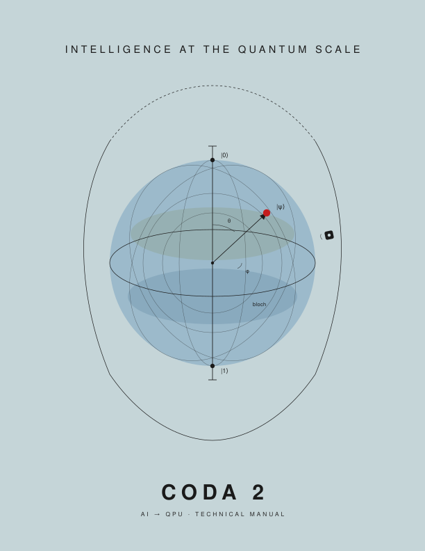
Coda 2 is a three-pane instrument for a quantum processing unit. The first thing you see is not a chat void. It is the stage: left drift · center device 3D · right cryostat, with a bottom-third dock for goals. Visual, text, and math stay in view at once.
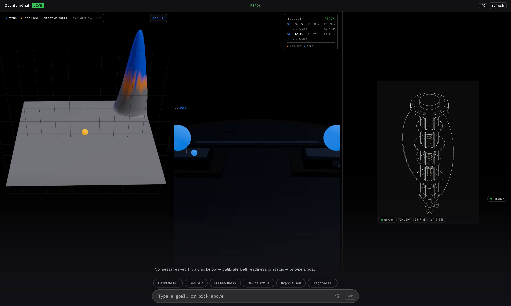
FIG. 0The live instrument on main. Three panes at rest. Left: parameter-drift landscape (orange applied, blue true). Center: 3D device — qubit spheres Q0 and Q1, readout card. Right: isometric cryostat plate with a status strip. Dock: six workflow chips and the composer.
Six workflow chips. Calibrate Q0 · Bell pair · Q0 readiness · Device status · Improve Bell · Diagnose Q0. Click one, or type a goal. The Calibrate Q0 path is unchanged: bring qubit 0 to ready, then the toolbar shows READY.
The product is multimodal on purpose: visual (the three panes), text (natural-language goals and the agent transcript), and math (fidelity, Δf, T1 / T2, mK) at the same time. A chat-only UI can take the same sentence and still hide the machine.
Stills. Live captures under docs/manual/assets/ui/manual-3pane-*.png. Rebuild the PDF with ./docs/manual/build.sh → docs/manual/coda-2-manual.pdf.
Coda 2 is a three-pane instrument for a quantum processing unit: parameter-drift landscape on the left, the 3D device in the center, the cryostat plate on the right, and a chat dock across the bottom. It is a control plane, and it is a stage. Three roles use one instrument. They do not do the same job.
A normal chat window is a transcript. You type, a model replies, and any physics lives only in sentences that scroll away. Coda 2 is instrument-first. The first thing you learn is the stage in FIG. 0: drift on the left, the device in the center, the cryostat on the right. Language is one channel, not the only surface. Physics stays in view while you talk. The chips in the dock are one-click goals.
A chat-only UI can accept the same sentence and still hide the machine. Here the stage does not yield to the transcript. You drag the splitters, read the numbers, and send a goal without leaving the instrument. Use FIG. 0 as the picture of the product. The stills later in this book are the same three-pane chrome, not the older one-pane or two-pane layouts.
Read the table. Then read the note for your role. The plate shows the same three stations. Each station uses one instrument.
| ROLE | WHAT YOU DO | WHAT YOU USE |
|---|---|---|
| Quantum control engineer | Builds and maintains the path from natural language to the agent to the adapter. | The QPUAdapter seam. ToolTraces. The calibration loop. The three metrics. |
| QPU operator | Calibrates, checks readiness, runs circuits, and cancels jobs. | LIVE and READY. Chips and the composer. When to recalibrate. How to read Δf, fidelity, and the three panes. |
| Technical lead | Evaluates the product for their stack. Optional. The question is whether their driver can sit behind the adapter. | The operator path: calibrate, then READY, then a Bell pair. The three metrics. The adapter seam. |
Table A.1. Who uses Coda 2. Pick your row. The later parts go deeper for that role.
You build and maintain the control software. A goal enters as POST /goals. The agent maps the goal to a tool. Every tool call writes a ToolTrace.
You keep the QPUAdapter seam. The waist is six methods: submit_job, poll_job, cancel_job, get_device_state, get_calibration, apply_calibration_update. The calibration loop measures fidelity, decides, applies an update, and measures again. The three metrics are time-to-calibrated, calibration success rate, and interface latency.
The default path is offline. It does not need a language-model key. If an optional planner is on, it falls back to the same rules. You extend the tools, or you replace the adapter. You keep the seam.
You run the instrument. You calibrate, check readiness, run circuits, and cancel jobs. You land on the idle home. The toolbar shows LIVE when the UI is connected. It shows READY centered when the device is fit for a circuit. You send a goal with a chip, or you type in the composer. Recalibrate when the state chip falls back to DRIFT, or when Δf grows. High Δf means the controls are off-target.
Read fidelity as Q0 percent in the toolbar and on the readout card in the center pane. Read the left pane for drift (orange applied versus blue true). Read the right pane for the cryostat plate and the status strip under it. The state chip sits at the far right.
You evaluate Coda 2 for your stack. You are a technical lead or a buyer of the integration. You use the same product the operator uses. You do not run a separate trial.
You follow one path: calibrate qubit 0, see READY, then run a Bell pair. You read the three metrics. You read the adapter seam. A simulator stands in for the device until a hardware adapter is connected. Your driver replaces that simulator behind the same six methods.
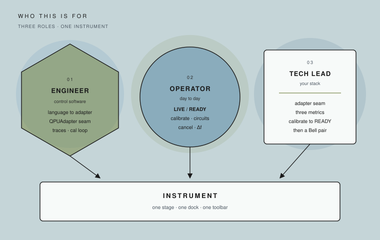
FIG. A.1Who this is for. Three stations, one instrument. The engineer builds and maintains the path from language to the adapter. The operator calibrates, checks readiness, runs circuits, and cancels jobs. The technical lead evaluates the product for their stack.
How to read this plate. Shape is the role. The hexagon is the engineer (the seam). The circle is the operator (a person at the screen). The rectangle is the technical lead (integration with their stack). Arrows run down into one instrument: stage, dock, and toolbar. You do not need a separate legend.
The product does four tasks. They match the deterministic planner (Table 7.2). Each task is a goal in ordinary language, one tool, and a result you can see. A chip is a short way to send the same goal.
| TASK | EXAMPLE GOAL / CHIP | TOOL | SUCCESS |
|---|---|---|---|
| Calibrate / bring ready | “Bring qubit 0 to ready” / Calibrate Q0 chip | calibrate_qubit | Toolbar READY. device.is_ready is true. The agent affirms. |
| Run a circuit (Bell) | Bell pair chip | run_bell_pair | The agent reports an estimated Bell fidelity. Turn details hold the counts; most shots should be 00 and 11. |
| Check device state | “device state” / health, status, temperature | get_device_state | You read LIVE, READY, and the telemetry. You do not start a circuit. |
| Cancel a job | cancel <job-id> | cancel_job | That job stops. It does not stay running. |
Table A.2. Four tasks. Same mapping as Table 7.2 in the orchestrator. Keywords: bring / calibrat / ready / tune; bell / circuit / entangl / pair; state / health / status / temperature; cancel plus a job id.
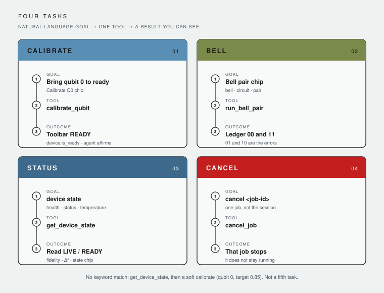
FIG. A.2Four tasks. Each card is a goal, one tool, and the result you look for. The line under the cards is the fallback. It is not a fifth task.
Fallback. If your sentence matches no keyword, the planner calls get_device_state, then calibrate_qubit on qubit 0 with target 0.85. Name the task you want. Do not rely on the fallback.
Open the instrument. Do not send a goal yet. This is the idle home. Three panes across the stage: drift on the left, the device in the center, the cryostat plate on the right. LIVE in the toolbar means the UI is talking to the control plane. The dock is empty. Chips sit above the composer. The composer is the lowest control.
FIG. A.3Idle home. The operator lands here. Left pane: drift grid (orange applied, blue true). Center pane: 3D device with a readout card at top right (Q0 / Q1 fidelity, T1, T2, err, mK). Right pane: cryostat plate with a status strip under it (READY · Q0 % · mK · Δf) and a state chip at the far right. Toolbar: Coda 2, LIVE, READY centered. Dock: empty transcript hint, six workflow chips, composer.
Type Bring qubit 0 to ready in the composer, or click the Calibrate Q0 chip. Send. The planner calls calibrate_qubit. Success looks like this: the toolbar shows READY, device.is_ready is true, and the agent says the qubit is fit for a circuit.
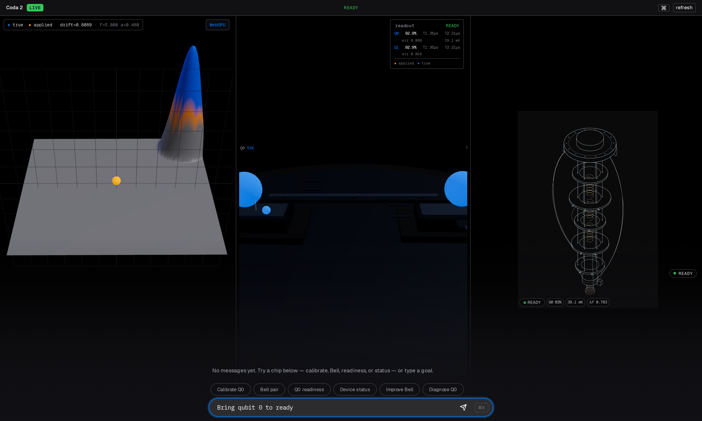
FIG. A.4Goal typed. The words sit in the composer above the chips. Nothing on the stage moves until you send, or until you click Calibrate Q0. All three panes stay in view.
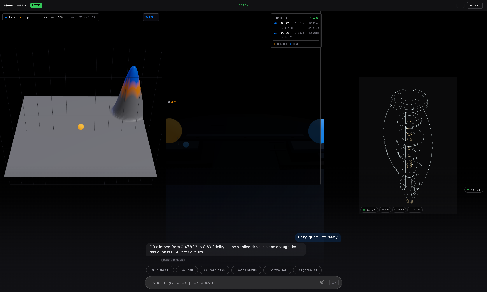
FIG. A.5Calibrate done. Toolbar shows LIVE and READY. The agent affirms: Q0 climbed to about 0.69 fidelity and is READY for circuits. The cryostat status strip and the state chip at the far right read READY. This is the success still for task 1.
What success means here. READY on the toolbar matches device.is_ready. Fidelity is up. Δf is smaller than it was at idle. You can try a circuit next. The full step-by-step, with every number named, is the Instrument walkthrough (STE.3).
Prefer READY first. Click the Bell pair chip, or type a goal that says Bell, circuit, or pair. The planner calls run_bell_pair. Success looks like this: the agent reply reports an estimated Bell fidelity — about 0.42 on this seed. The transcript now carries two turns, and a small tool pill marks the run.
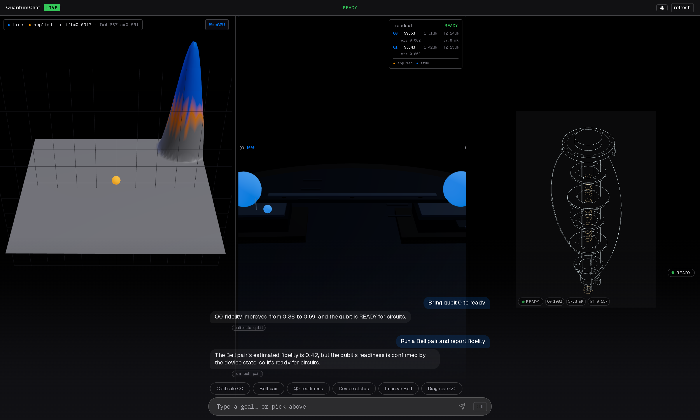
FIG. A.6Circuit done. The transcript has a second turn: you ask for a Bell pair and report fidelity; the agent answers with the estimate and a run_bell_pair tool pill. All three panes remain visible: drift left, device center, cryostat right.
Type device state, or a health, status, or temperature word. The planner calls get_device_state. Success looks like this: you can read LIVE, READY, fidelity, and Δf. You do not start a calibration, and you do not start a circuit. Use the idle home (FIG. A.3) before a goal. Use the map (FIG. A.7) after a session. There is no separate status still.
Type cancel and the job id. The planner calls cancel_job. Success looks like this: that job stops. The session stays open. This book has no cancel still. FIG. A.2, card 04, is the picture for this task.
Use this still as a map. The labels are in the list. They are not drawn on the picture.
FIG. A.7Map of the instrument. Top: toolbar (Coda 2, LIVE, READY, ⌘, refresh). Left: drift. Center: device 3D with the readout card. Right: cryostat plate and status strip. Bottom: dock (transcript, six workflow chips, composer). No callout arrows — use the five labels above. Older one-pane and two-pane stills are historical; they are not this map.
Sources. Planner keywords: orchestrator/planner.py (Table 7.2). Adapter methods: adapter/base.py. Goals: POST /goals in api/server.py. Stills: assets/ui/manual-3pane-home.png, manual-3pane-typed.png, manual-3pane-ready.png, manual-3pane-bell.png. Plates: diagrams/plate-who-for.svg, diagrams/plate-four-tasks.svg. Tip: main (three-pane chrome).
Coda 2 takes a goal in ordinary language and runs it on a quantum processing unit through a typed tool catalog and a QPU adapter. The interaction is meant to go beyond a normal ChatGPT element.
You see and manipulate properties of a quantum computer in the format that fits the moment. Visual: a three-pane stage — drift landscape on the left, the 3D device in the center, the cryostat plate on the right. Text: natural-language goals and the agent transcript. Math: fidelity, Δf, T1 / T2, ToolTraces, and metrics. The product is instrument-first. Physics stays in view. Language is one channel, not the only surface. A chat-only UI would bury those properties in prose and scroll them away.
An operator states a goal. An agent maps that goal onto a small catalog of typed tools. The tools call the adapter. The screen is an instrument: a live three-pane stage (drift · device · cryostat), and a dock that holds the conversation.
A simulator stands in for the device until a hardware adapter is connected.
Day to day the product does four jobs: bring a qubit to ready, run a Bell pair, check device state, and cancel a job. The control plane records time-to-calibrated, calibration success rate, and interface latency. The adapter seam is six methods. The default path is offline and does not need a language-model key. When the optional planner is on, it falls back to the same rules.
This edition of the product documents package conductor-qpu 0.1.0, main (three-pane chrome), through PR #25–#27. The stage is three panes behind two splitters. The left pane is the drift grid. The center pane is the device. The right pane is the cryostat plate.
Edition. Coda 2 · package conductor-qpu 0.1.0 · main (three-pane chrome, PR #25–#27) · 2026-10-05 (PT)
Use this section when you operate the app. The screenshots below are a complete user flow captured on main (three-pane chrome) with the API on :8000, the UI on :3000, and the live narrator writing each agent reply (NVIDIA NIM when keyed, otherwise a template). Every shot shows all three panes: drift landscape on the left, the 3D device in the center, the cryostat plate on the right. The dock is a real chat transcript: your goal as a you bubble on the right, an agent reply on the left with a small tool pill under it, then the workflow chips, and the composer always the lowest control. Each STE step states what you typed or clicked and what the stage did next. Each figure also translates the on-screen numbers into plain English for that frame.
The stage is three panes with two splitters between them. The dock sits at the bottom, over a bottom-third frost. Read the bottom of every screenshot top-to-bottom:
agent_message). Tiny tool pills may sit under the reply; they are secondary.The three-pane stage extends under this dock. Panes start roughly equal. Left: high-contrast drift grid, coplanar with the fidelity surface. Center: the 3D device — qubit spheres Q0 and Q1, chiplets, resonators — plus a readout card at top right (Q0 / Q1 fidelity, T1, T2, err, mK). Right: an isometric dilution-refrigerator plate labelled FIG 1 · DILUTION FRIDGE, with a status strip under it (READY · Q0 % · mK · Δf) and a StageStateChip at the far right (DRIFT · CALIBRATING · READY…). Two iPadOS Split View–style splitters separate the three panes. Hover shows a capsule drag handle. Drag to resize. Each pane keeps a minimum width, roughly 22–28% of the stage. There are no traffic lights, no glass inset, and no tabs. A Safari-safe bottom-third progressive frost (stacked solid translucent bands on a dedicated .stage-blur sibling — no backdrop-filter on the dock) softens only the lower third so the viz stays readable under the transcript without frosting the whole stage.
Read this table once. Then the STE frames make sense.
| LABEL | WHAT YOU SEE | WHAT IT MEANS FOR YOU |
|---|---|---|
| LIVE | Green pill in the toolbar | The UI is connected to the control plane. Fresh device data can arrive. If LIVE is missing, check that the API is running. |
| READY / CAL NEEDED | Status next to LIVE | READY means every qubit’s readout fidelity is at least 0.82. Fit for a circuit attempt. CAL NEEDED means calibrate before you trust a circuit. |
| Q0 xx% | Toolbar percentage | Readout fidelity for qubit 0 as a percent. Higher is better — how often the qubit answers correctly when measured. |
| fid 0.xxxx | Blue number in the toolbar | Same fidelity as a fraction (0–1). Compare to the 0.88 calibration threshold. |
| mK | Temperature next to Q0 | Reported temperature in millikelvin. Lower is colder. Theatrical here (tied to fidelity), not a fridge sensor. |
| Δf | Orange number | Frequency detuning. High Δf = controls are off-target (mistuned; fidelity will fall). Smaller is better. |
| applied (orange) | Marker / legend | Last parameters the control plane wrote — what the AWG would play. |
| true (cyan / blue) | Marker / legend | Hidden sweet spot the simulator owns. Calibration moves applied toward true. On real hardware you never see “true” directly. |
| blue sphere / ring | Drift stage cue | Blue = qubit is calibrated enough to trust for the next job (near the sweet spot). |
| orange sphere | Drift stage cue | Applied / off-target marker. When orange sits far from blue, you still need calibration. |
| three-pane stage | Full stage (no tabs) | Three panes at rest: left = high-contrast drift grid (orange applied, blue true); center = 3D device (qubit spheres Q0 / Q1, chiplets, resonators) with a readout card at top right; right = isometric cryostat plate with a status strip under it. Two iPadOS Split View–style splitters with hover capsule handles. Drag to resize (~22–28% minimum per pane). No glass inset. No tab flip. Bottom-third progressive frost under the chat dock; top ~2/3 stay sharp. |
| splitter | Two vertical separators | Drag a capsule handle to give one pane more width. Hover reveals the handle. You cannot collapse a pane below its minimum width (roughly 22–28%). |
| state chip | Bottom-right stage badge | Device lifecycle: OFFLINE → DRIFT → CALIBRATING → RUNNING → READY / FAILED. Grounded on live connection + goal status + is_ready. |
| 0.88 line | Orange dashed line on climb charts | Calibration success line. Stay at or above it and the loop succeeded. |
| you / agent | Chat bubbles in the dock | you is the goal you sent. agent is the operator-facing sentence from the narrator (NVIDIA NIM when configured; otherwise a deterministic template). Always non-empty. |
Table W.1. Operator glossary. Use it to read every STE frame below.
The figures below are one continuous successful session: idle → type Calibrate Q0 → agent affirms READY on the three-pane stage → Bell → follow-up. All three panes (drift · device · cryostat) are in every wide shot; the dock close-ups isolate the chips and the transcript. Progressive blur is visible in every shot (grid / viz bleeding through the frosted dock). Captured with the live narrator; toolbar shows LIVE and READY after calibrate.
device.is_ready == true). The agent bubble affirms that Q0 is READY for circuits. Transcript bubbles sit in the frosted dock directly above chips and composer — not mid-stage.
You do. Open http://localhost:3000 with the API on :8000. Land on the three-pane stage. Do not send a goal yet.
What happens. Left pane = high-contrast drift grid, coplanar with the fidelity surface. Center pane = the 3D device (qubit spheres Q0 and Q1, chiplets, resonators) with a readout card at top right (Q0 / Q1 fidelity, T1, T2, err, mK). Right pane = the cryostat plate, labelled FIG 1 · DILUTION FRIDGE, with a status strip under it and a StageStateChip at the far right; at idle it typically reads DRIFT (or OFFLINE if the API is down). Each splitter shows a capsule handle on hover. Dock shows an empty transcript hint (“No messages yet. Try a chip below…”), six workflow chips, and an empty composer (lowest). Toolbar: brand and LIVE at left, READY centered, ⌘ and refresh at right. Viz extends under the progressive-blur dock. There is no glass inset and no tab control.
FIG. W.1 · STE.1Idle three-pane stage. Drift grid coplanar on the left. 3D device with the readout card in the center. Cryostat plate with a status strip under it on the right. Two splitters with hover capsule handles. LIVE in the toolbar; READY centered. No traffic lights. No glass inset. No tabs. Empty chat transcript hint above six chips. Composer empty at the bottom of the frosted dock. StageStateChip at the far right. Grid lines bleed through the progressive blur.
Plain English for this frame. LIVE means the control plane is connected. The left grid is drawn in high contrast and lies in the same tilted plane as the fidelity surface. The tall “mountain” is that surface over frequency and amplitude error — the peak is where the qubit works best. Orange vs blue markers are applied vs true: if they sit apart, controls are still off-target (Δf will look high). The center pane is the device view: two qubit spheres plus chiplets and resonators, with a readout card at top right that repeats fidelity with T1 / T2, err, and mK labels. It is UI, not a fridge. The right pane is a static isometric plate with a live status strip; drag a splitter if you want one pane wider. No chat turn yet because you have not spoken. The frosted dock is translucent on purpose so you keep seeing the physics while you type.
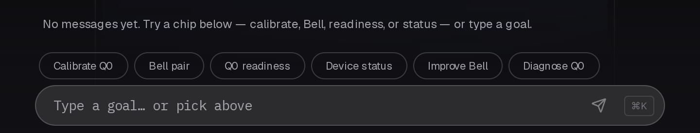
FIG. W.1b · STE.1Dock close-up. Empty-state hint, the six workflow chips (Calibrate Q0 · Bell pair · Q0 readiness · Device status · Improve Bell · Diagnose Q0), and the composer. ⌘K opens the command palette; Enter sends the typed goal.
You do. Click the composer (lowest bar). Type Bring qubit 0 to ready. Do not send yet — or use the Calibrate Q0 chip instead.
What happens. The composer holds your intent. Chips remain above it. Still no transcript turn until send.
FIG. W.2 · STE.2Composer typed. Goal text sits in the lowest dock control; the chips row stays above it. All three panes stay in view: drift left, device center, cryostat right. Progressive blur still shows stage content under the frosted bar.
Plain English for this frame. You are about to ask the agent to make qubit 0 trustworthy. Nothing has changed on the stage yet — typing alone does not move parameters. Send (or the Calibrate Q0 chip) is what starts the loop.
You do. Click chip Calibrate Q0 (or press send on the typed goal).
What happens. A you bubble appears with the goal. While tools run, the agent line shows “running…”. The fidelity-climb HUD rises toward the 0.88 line. When the loop finishes successfully, the toolbar flips to READY and the agent line affirms that Q0 is READY for circuits. Toolbar Δf shrinks; fid / Q0 % rise. Toast may say “Reached threshold.”
Agent reply. The agent bubble gives a READY affirmation: Q0 is fit for circuits. Exact wording comes from the narrator (NVIDIA NIM when configured; otherwise a template) and can change from capture to capture. The affirmation must agree with device.is_ready.
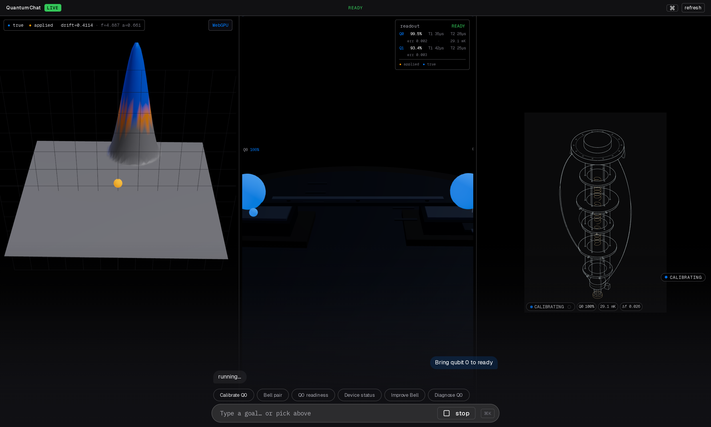
FIG. W.3 · STE.3Calibrate turn. Your you bubble (“Bring qubit 0 to ready”) sits above the chips; the agent replies with the live fidelity and whether another pass is needed. All three panes stay visible: drift left, device center, cryostat right. The Calibrate Q0 path is unchanged.
Plain English for this frame. The loop is running: measure, decide, apply, measure again. When the fidelity-climb HUD is visible, its line is “how often the qubit answers correctly” across calibration steps and the orange dashed line is the pass bar (0.88). When the climb line sits above that bar, calibration succeeded for this product. The CALIBRATING badge is the same lifecycle signal in two places — the strip under the plate and the chip at the far right. If Δf is still non-tiny, controls are closing in on the sweet spot.
FIG. W.4 · STE.3 (success)Successful outcome. Toolbar shows LIVE and READY. The agent reports that Q0 climbed to about 0.69 fidelity and is READY for circuits. The cryostat status strip and the StageStateChip at the far right read READY. All three panes stay in view: drift grid left, device with readout card center, cryostat plate right. Bubbles sit above chips; composer stays lowest.
Plain English for this frame. This is a successful calibrate. Read the toolbar left to right: LIVE = connected; READY = the device is fit for a circuit attempt; Q0 % and fid are the live fidelity. The readout card in the center pane repeats fidelity with T1 / T2 / err / mK for the device view. The strip under the cryostat plate repeats the same lifecycle state: READY · Q0 % · mK · Δf. The agent bubble is the narrator’s operator summary of calibrate_qubit — it must agree with READY, not contradict it. Tool pills under the bubble are the audit trail. Do not treat one screenshot’s sentence as a fixed script.
You do. Nothing — stay on the stage. There is no device tab. Drift (left), device (center), and cryostat (right) are peer panes. Drag a splitter only if you want a different width.
What happens. See FIG. W.4. After calibrate, the StageStateChip at the far right reads READY and the cryostat status strip reads READY · Q0 % · mK · Δf. Toolbar shows LIVE with READY centered. All three panes stay visible with the same chat transcript. The left grid stays high-contrast and coplanar. The center device keeps its qubit spheres, chiplets, resonators, and the readout card at top right.
Plain English for this pane set. The glowing spheres in the center pane are qubit stand-ins. A bright / blue-leaning qubit with high % means “good enough to trust.” Orange emphasis or a low % means “still needs work.” The climb chart (if visible) still compares fidelity to the 0.88 pass bar. The state chip and the strip under the plate are the same lifecycle readout for this session — READY means fit for a circuit attempt. All three panes stay up; you do not flip a tab.
You do. Prefer READY first (toolbar green). Click chip Bell pair (goal: “Run a Bell pair and report fidelity”). Stay on the three-pane stage — all three panes remain visible while the transcript grows.
What happens. A second you/agent turn stacks in the transcript. Toast “Bell complete.” The agent sentence explains shot contrast or estimated fidelity in plain English.
Agent reply. The agent states the estimated fidelity — about 0.42 on this seed. Wording varies by capture. READY from calibrate still holds in the toolbar.
FIG. W.7 · STE.5Multi-turn conversation on the three-pane stage. Transcript stacks calibrate then Bell above the chips; the agent reply carries a run_bell_pair tool pill; composer stays lowest. Drift left, device center, cryostat right, all still live. Progressive blur shows grid bleeding through the dock.
Plain English for this frame. Bell is a circuit job, not another calibration. The agent reports an estimated Bell fidelity (about 0.42 here) rather than raw shot counts: a toy noisy simulator, an estimate from few shots, and drift all push it down. The tool pill under the reply names the call that ran. High fid in the toolbar still means “answers are trustworthy enough.” Δf still means “are the controls on-target?” — if it climbs again later, re-calibrate before the next circuit. Two chat turns = two goals in one sitting: prepare the qubit, then run the entanglement check.
FIG. W.8 · STE.5Dock close-up. Two turns: you on the right, agent on the left, a small tool pill under each agent reply (calibrate_qubit, run_bell_pair). The six workflow chips sit below; the composer is the lowest control.
You do. Type another goal in the composer (still lowest) — for example device state — and send. The transcript grows; the three panes keep updating.
What happens. A third turn appends. get_device_state answers from live device data: LIVE, READY, fidelity, T1 / T2, mK, Δf. The drift grid and the device readout card repaint on the next poll; the cryostat status strip keeps the same lifecycle chip.
Plain English for this step. Treat the stage as the operator’s home screen after a successful session: physics on three panes, agency in the dock. If LIVE is green and READY is on, you can try another circuit. If the state chip falls back to DRIFT or Δf grows, ask to Calibrate again — the same transcript will append a new turn. FIG. W.7 is the last wide shot; nothing here needs a new frame.
| CHIP / GOAL TEXT | TOOLS RUN | OPERATOR OUTCOME |
|---|---|---|
| Calibrate Q0 · “Bring qubit 0 to ready” | calibrate_qubit | Closed-loop measure → decide → apply until fid ≥ 0.88 or iterations end; on success toolbar READY and agent affirms “READY for circuits” |
| Bell pair · “Run a Bell pair and report fidelity” | run_bell_pair | Circuit job; agent explains shot contrast in plain English |
| Q0 readiness · “Report qubit 0 readiness and fidelity status” | get_device_state | Surfaces readout fidelity / readiness so Bell fidelity is not the only signal |
| Device status · “Report device health and temperature status” | get_device_state | Health / temperature / readiness snapshot |
| Improve Bell · “Run a precise Bell pair and report fidelity” | run_bell_pair | More shots (precise); better fidelity estimate after calibrate |
| Diagnose Q0 · “Check qubit 0 health and readout status” | get_device_state | Diagnostic-style status when fidelity alone is insufficient |
| Free text in the composer | Deterministic planner (optional LLM planner when enabled) | Same tool catalog; narrator always returns agent_message (NIM when keyed, else template) |
Table W.2. Chips and natural-language goals map to the tool catalog. Planner stays offline-first; narrator uses NVIDIA NIM when NVIDIA_NIM_API_KEY is set.
.stage-blur sibling covering the bottom ~33vh with stacked solid translucent gradients (no backdrop-filter on .dock — Safari previously leaked full-stage frost). Transcript, empty state, chips, and the high-contrast composer paint above .dock-tint via z-index:1. The viz fills under the dock on purpose; only the bottom third is softened. Agent replies are generated live (NIM or template); wording varies run to run. On a real QPU the same toolbar labels still apply; the physics behind them changes behind the adapter.
Sources. Live UI at :3000 against API :8000 on main (three-pane chrome); captures under docs/manual/assets/ui/: manual-3pane-home.png, manual-3pane-dock-chips.png, manual-3pane-typed.png, manual-3pane-calibrating.png, manual-3pane-ready.png, manual-3pane-bell.png, manual-3pane-dock-transcript.png (STE.1–STE.6); ui/app/page.tsx (three-pane stage, two splitters, chat transcript + composer); ui/app/globals.css (.dock progressive layers); ui/components/viz/calibration-surface.tsx; ui/components/viz/device-3d.tsx (readout card); ui/components/viz/cryostat-plate.tsx (plate + status strip); ui/components/stage/stage-state-chip.tsx; orchestrator/narrator.py; orchestrator/planner.py; calibration/service.py (threshold 0.88); models/types.py (READINESS 0.82); api/server.py (agent_message on POST /goals).
One line per release, newest first. This book describes main at 3cc9bed (three-pane chrome through PR #27, plus the stage-blur edge fix). Dates are America/Los_Angeles. Older rows keep the AuthorDate previously recorded from git.
| RELEASE | DATE (PT) | WHERE | CHANGE |
|---|---|---|---|
| 0.2.0 / coda-2 | 2026-10-04/05 | main @ 3cc9bed | Three-pane stage (drift · device 3D · cryostat); chat bubbles; high-contrast composer; Safari-safe bottom-third .stage-blur (solid bands); six workflow chips (readiness / status / improve Bell / diagnose); product rename to Coda 2. PR #25–#27. |
| 0.1.0 / #19–#24 | 2026-10-04 | main | Cryostat plate added as the third pane (#19); cryostat layout polish and Safari frost fixes; larger mid-pane 3D device (#20–#24). |
| 0.1.0 / #18 | 2026-10-03/04 | main @ b05005c | Higher contrast on the left drift grid. iPadOS Split View–style resizable separator with a capsule drag handle on hover. |
| 0.1.0 / #17 | 2026-10-03/04 | main | Left drift grid aligned coplanar with the fidelity surface (shared tilted group). |
| 0.1.0 / #16 | 2026-10-03/04 | main | Richer right Device3D: chiplets, resonators, and a live fidelity / T1 / T2 strip. |
| 0.1.0 / #15 | 2026-10-03/04 | main | Drift framing shifted up and zoomed out. |
| 0.1.0 / #14 / #13 | 2026-10-03/04 | main | Zoom-out steps for the left drift camera. |
| 0.1.0 / #12 | 2026-10-02 | main @ 6a1e168 | True side-by-side stage: equal peer panes (left param-drift, right 3D device); no glass inset. |
| 0.1.0 / #11 | 2026-10-02 | main | Combined drift+device stage (no tabs); glass drift inset; remove macOS traffic lights; founder-demo toolbar polish. |
| 0.1.0 / #10 | 2026-10-02 | main | Device HUD: clear label overlaps; bottom-right StageStateChip (OFFLINE→DRIFT→CALIBRATING→RUNNING→READY/FAILED). |
| 0.1.0 / #9 | 2026-10-02 | main | Narrator honors post-goal device.is_ready; READY affirmation when calibration succeeds. |
| 0.1.0 / #2 | 2026-10-02 10:27 | main | 3D device panel; hardened calibration; optional LLM planner with fallback; founder-demo Makefile polish. |
| 0.1.0 / #1 | 2026-10-01 23:22 | main | Squash-merge: QPUAdapter + NoisySimulatorBackend, CalibrationService, Orchestrator (5 tools), FastAPI control plane, Next.js instrument UI (65/35, WebGPU drift), three metrics, demos, pytest. |
| 0.1.0 (PR) | 2026-10-01 | PR #1 | Multiple commits squashed: Streamlit → Next.js+shadcn; ToolTrace observability; founder README; detuning card; demo guardrails; progressive-blur dock. |
| init | 2026-09-29 00:32 | main | Initial commit (empty / scaffold). |
Table R.1. Releases on main. “Where” is the git ref that landed the change. The #12 ref is the commit that landed that release. It is not the tip of this book.
PR #1’s squash commit message enumerates the delivered surface: adapter interface and toy 1–2 qubit simulator with drift; iterative gradient-free calibration targeting a fidelity threshold; orchestrator with deterministic planner (offline, no LLM keys); FastAPI endpoints for goals, jobs, metrics, health, SSE, and direct calibrate/circuit; Next.js UI replacing an earlier Streamlit prototype; demos for calibration and Bell; metrics time_to_calibrated, calibration_success_rate, interface_latency; pytest covering contract, convergence, API happy path, and failure paths.
Later amendments inside the same PR added structured ToolTrace emission on every orchestrator call, a detuning/drift narrative in the UI, cancel guardrails, and the instrument layout (stage hero + progressive-blur dock). The book documents the merged result only — not intermediate PR commits as separate releases.
PR #2 (merged 2026-10-02 PT) keeps the adapter seam and adds founder-demo outcomes: a React Three Fiber device tab beside the existing drift landscape; calibration hardening so typical drift seeds climb past 0.88; an optional LLM planner with JSON extraction and hard fallback to plan_from_goal; and Makefile targets for founder demos (including LLM and stub modes). Default path remains deterministic and offline. The device tab from PR #2 is historical. Current UI is the three-pane stage (#19 onward), not a tab flip.
This system has a single shipping revision. The numbers below are the contract of what the control plane measures. Typical demo ranges come from the default noisy simulator (seeded). They are not a multi-week A/B study.
| METRIC | DEFINITION | WHERE SET / READ | TYPICAL DEMO RANGE |
|---|---|---|---|
| time_to_calibrated | Wall seconds from calibrate() start to best_fid ≥ threshold (successes only) | CalibrationMetrics.total_time_to_cal_s / successes | Sub-second to a few seconds on sim |
| calibration_success_rate | successes / attempts (running) | CalibrationMetrics | Often high on sim; 0 when fid-capped |
| interface_latency | Seconds per apply_calibration_update roundtrip | sampled each iteration | Near-zero on in-process sim |
| readiness | all qubits readout_fidelity ≥ 0.82 | DeviceState.is_ready | Boolean; notes string |
| service threshold | best_fid ≥ 0.88 for CalibrationResult.success | CalibrationService.fidelity_threshold | API wires 0.88 / max 60 |
Table R.2. Metrics contract. Sim timings are toy; real QPU wall times will dominate.
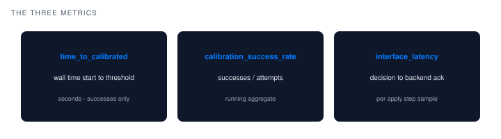
FIG. R.1The three product metrics. CalibrationService owns the first two aggregates and the latency samples; MetricsAggregator additionally rolls latency percentiles and fidelity samples for the HTTP /metrics surface.
ConductorShapedAdapter stub documents the shape of a real driver and refuses real work.
This manual is an engineering book for Coda 2, the AI→QPU integration layer. It is not a marketing deck. Start with The instrument (FIG. 0 — the live three-pane still). Then Who this is for (readers and the four tasks). Then the Instrument walkthrough (screenshots and flows). Then read Part 1 (mental model) and Part 2 (theory of the interface) before the reference chapters. Everything cites module paths under src/conductor_qpu/ or ui/ on main (three-pane chrome).
| MARK | MEANING |
|---|---|
path/to/file.py | Exact path in the repo relative to package root or ui/ |
| FIG. n.m | Captioned figure (SVG diagram or screenshot) |
| Table n.m | Reference table |
| Slate | Control plane / orchestrator in diagrams |
| Blue #007AFF | True / target / high fidelity (iOS system blue) |
| Orange #FF9500 | Applied calibration / mid band / threshold line |
| Green #34C759 | Success / READY / LIVE |
| Red #FF3B30 | Failure / cancel / capped fidelity (UI diagrams) |
| Seafoam / olive / blue / red | Mid-century plate palette (#c5d5d8, #7a8a4a, #5a8fb5, #c41e1e) — Diagrams part + cover |
| Rule of thumb | Operator-facing design rule |
| Honesty | Explicit limit of this system (sim vs hardware) |
| Sources | Code paths and symbols that back the claim |
Table C.1. Typographic and colour conventions used throughout.
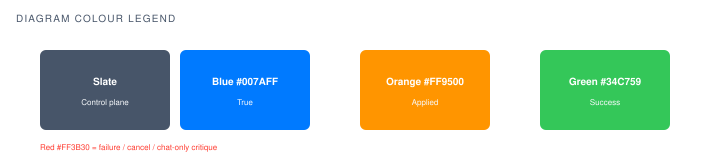
FIG. C.1Diagram colour legend. Matches the UI’s iOS system palette used in calibration-surface.tsx and the status chrome.
READINESS_READOUT_FIDELITY_THRESHOLD: device is_ready iff every qubit’s readout fidelity is above this.CalibrationService.fidelity_threshold and API wiring; also the planner’s default target_fidelity for “bring to ready”.measure_fidelity return (permanently below threshold).max_iterations for CalibrationService.Sources. src/conductor_qpu/models/types.py (READINESS_*); calibration/service.py; api/server.py (_calibration construction); ui/app/page.tsx; ui/components/viz/calibration-surface.tsx.
Start with the machine. Then look at the plug. A QPU is a set of two-level systems. Classical pulses steer them. Readout returns classical bits. The device drifts. This software sits above that stack. Natural-language goals and an orchestrator call a narrow QPUAdapter. The backend stands in for cryo and electronics. Four nouns remain clear once that seam is visible: goals, tools, jobs, and the calibration loop.
A quantum processing unit is not a CPU with exotic opcodes. It is a small set of engineered two-level systems (qubits). Microwave and baseband electronics couple to those qubits. A cryogenic environment keeps thermal noise low so coherence lasts. Classical software decides which pulses to send. The physics decides what you get back. The primer below is the minimum model an operator or agent author needs.
This manual uses a superconducting transmon as the example modality. A transmon is a Josephson junction with a large shunt capacitor. That circuit forms a weakly anharmonic oscillator. The two lowest levels are the computational states |0⟩ and |1⟩. A readout resonator couples to the qubit. A microwave drive (XY) rotates the state. A flux or Z bias sets the qubit frequency when the junction is tunable. Other modalities (spin, trapped ion) differ in device physics. They still use pulses for control and a classical result for readout.
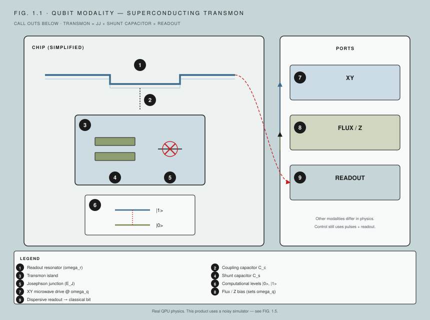
FIG. 1.1Qubit modality — superconducting transmon with readout resonator, XY drive, and flux/Z bias.
The chip holds a transmon and a readout resonator. The Josephson junction sets the nonlinearity. The shunt capacitor sets the charging energy. XY microwave pulses rotate the state. Flux bias sets frequency on tunable devices. Readout probes the resonator and returns a classical bit. This figure shows real QPU physics. This product uses a noisy simulator — see FIG. 1.5.
Cite. P. Krantz et al., “A quantum engineer’s guide to superconducting qubits,” Appl. Phys. Rev. 6, 021318 (2019); arXiv:1904.06560 — https://arxiv.org/abs/1904.06560
Room-temperature racks hold the AWG, DAC, local oscillator, mixers, digitizer, and control PC. Drive lines go down through the dilution refrigerator. Stages typically run at about 300 K, 4 K, still (~1 K), and the mixing chamber (MXC, ~10–20 mK). Attenuators on the drive path cut thermal noise into the qubit. The readout path amplifies a weak response: a TWPA near the sample, then a HEMT at 4 K, then room-temperature electronics. The sample package sits at the MXC.
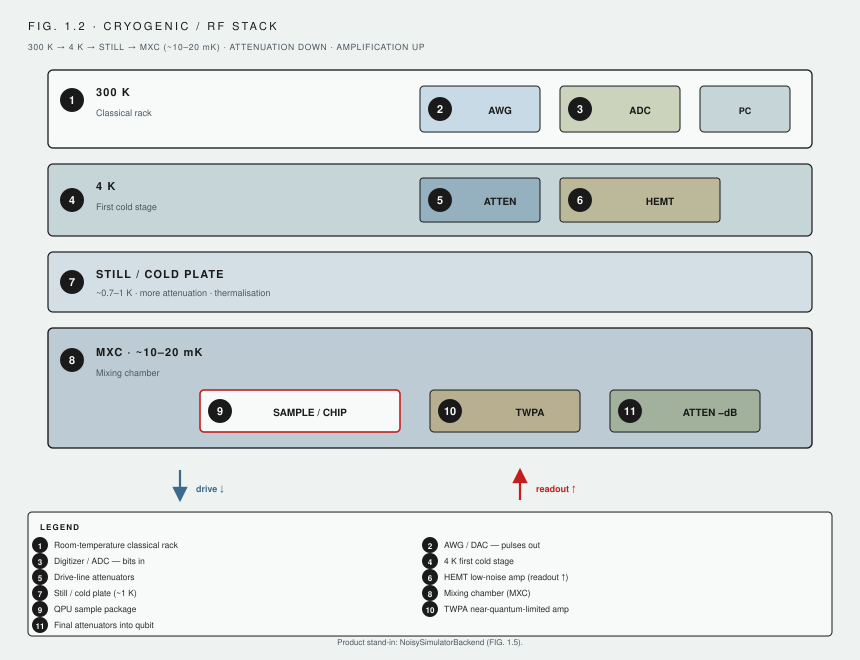
FIG. 1.2Cryogenic / RF stack — 300 K rack through MXC, with attenuation down and amplification up.
Drive signals move down the fridge. Attenuators protect the qubit from room-temperature noise. Readout signals move up. A TWPA and a HEMT amplify the weak probe response. The digitizer turns that response into bits. This stack is real QPU infrastructure. The product stands in for it with NoisySimulatorBackend (FIG. 1.5).
Cite. P. Krantz et al., Appl. Phys. Rev. 6, 021318 (2019), arXiv:1904.06560; Keysight, “Characterizing Superconducting Qubits” application note — https://www.keysight.com/us/en/assets/3120-1387/application-notes/Characterizing-Superconducting-Qubits.pdf
Gates are the logical recipe (X, Y, CZ, Rz, and others). Pulses are the physical voltages and microwave envelopes. An AWG and LO emit those envelopes. Fridge wiring carries them to the qubit. The qubit state evolves. A readout chain amplifies the resonator response. A digitizer yields a classical bitstring. The classical PC classifies the bits, logs them, and decides the next pulse sequence. Fidelity is the rate at which those bits match the intended result.
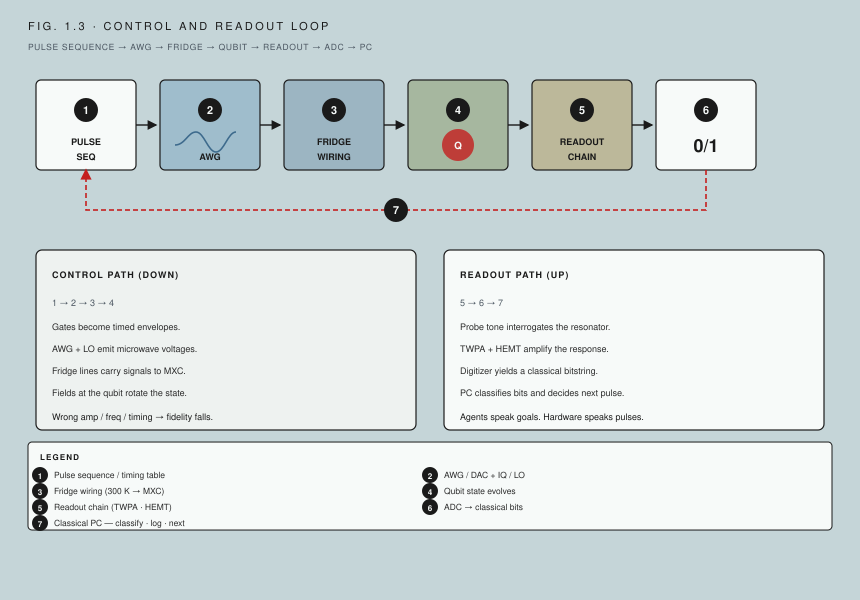
FIG. 1.3Control and readout loop — pulse sequence → AWG → fridge → qubit → readout chain → digitizer → PC.
Control is continuous and analog on the wire. Readout is discrete and classical in the log. An agent does not speak in volts. It speaks in goals. Every successful goal becomes a pulse schedule and a measured bitstring. Wrong amplitude, frequency, or timing rotates the wrong amount. Fidelity falls.
Cite. P. Krantz et al., arXiv:1904.06560; IBM Qiskit Pulse (backend control / Schedule) — https://docs.quantum.ibm.com/api/qiskit/0.46/pulse; Keysight, “Characterizing Superconducting Qubits” — https://www.keysight.com/us/en/assets/3120-1387/application-notes/Characterizing-Superconducting-Qubits.pdf
The device moves. Temperature, LO phase, flux bias, and cable response wander. Applied parameters drift away from the true sweet spot. That gap is detuning. As detuning grows, gate fidelity falls. Circuits stop being useful. Calibration is a recurring loop: measure, decide whether to move knobs, apply an update, and remeasure. Knobs include amplitude, frequency, and timing. Observables include gate fidelity, readout fidelity, and (on hardware) T1/T2-class metrics. This simulator reports a fidelity kernel instead of full T1/T2.
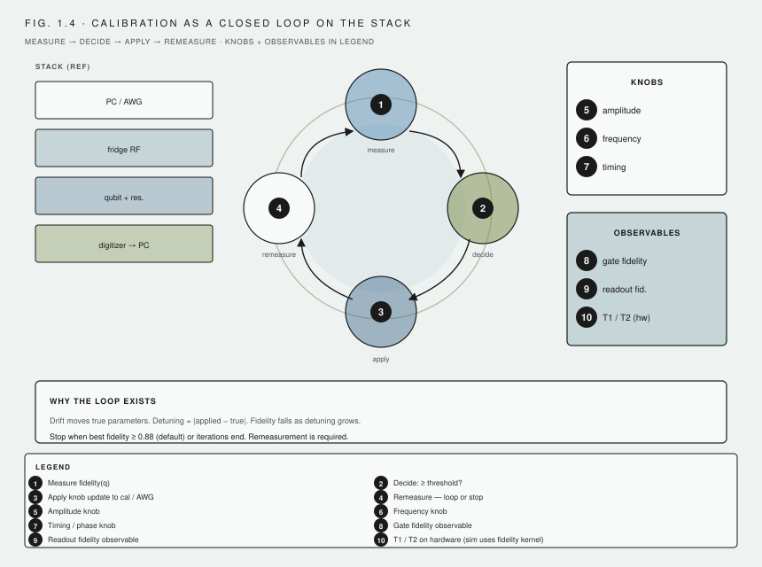
FIG. 1.4Calibration as a closed loop — knobs (amplitude, frequency, timing) and observables (fidelity, readout fidelity; T1/T2 on hardware).
Drift moves true parameters. Detuning is the measurable gap. Fidelity decay is why you care. Stop when best fidelity meets the threshold (default 0.88) or iterations end. Without remeasurement against a threshold, calibration is not an agent tool. It is a hope.
Cite. N. Wittler, F. Roy, K. Pack, M. Werninghaus, et al., “Integrated Tool Set for Control, Calibration, and Characterization of Quantum Devices Applied to Superconducting Qubits,” Phys. Rev. Applied 15, 034080 (2021) — https://journals.aps.org/prapplied/abstract/10.1103/PhysRevApplied.15.034080
This system does not replace the fridge. It plugs in above classical control. It sits at the software↔device boundary. Natural-language goals and the orchestrator sit with the operator layer. The QPUAdapter is the contract. Six typed methods carry all device talk. In this prototype, NoisySimulatorBackend stands in for cryo plus electronics. It is a toy 1–2 qubit model with hidden true parameters, drift, and a climbable fidelity kernel. Closed-loop calibration uses measure → decide → apply through that same adapter. The instrument UI keeps physics in view. Three resizable panes: a high-contrast drift grid on the left, a denser 3D device in the middle, and an isometric cryostat plate on the right. Two resizable splitters (capsule handles on hover; about 22–28% minimum per pane) separate them. There are no tabs. PR #2 used tabs labeled drift | device. That flip is past. The 3D cryo device panel is a UI surface. It is not a real fridge. The dock holds the agent ledger.
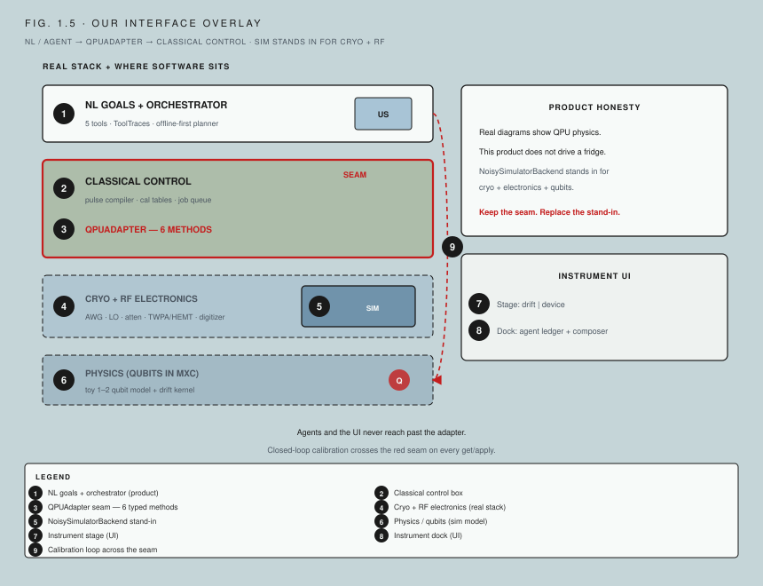
FIG. 1.5Interface overlay — NL/agent/orchestrator map onto the classical-control box; NoisySimulatorBackend stands in for cryo and electronics.
The red bar is the product seam. Agents and the UI never reach past it. Swap the noisy simulator for a real AWG driver later. Keep the tools, traces, metrics, and instrument. The dashed loop is calibration. Every get or apply of cal params crosses the adapter. Each apply samples interface latency. The 3D device panel is UI, not hardware.
Cite. Product seam (this repo). Pulse-schedule concept: IBM Qiskit Pulse — https://docs.quantum.ibm.com/api/qiskit/0.46/pulse. Calibration-loop pattern: Wittler / Werninghaus et al., Phys. Rev. Applied 15, 034080 (2021).
A goal is a short natural-language string. An operator or agent submits it. Examples the deterministic planner accepts: “Bring qubit 0 to ready”, “Run a Bell pair and report fidelity”, “Report device health and temperature status”, “Check qubit 0 health and readout status”, “cancel <job-id>”. Goals enter through POST /goals or the UI composer, chips, or ⌘K palette. They are not LLM prompts by default. The planner in orchestrator/planner.py maps them to a list of ToolCall records. Optional LLM planning exists behind CONDUCTOR_ENABLE_LLM. It is off by default. The product path is offline-first.
The orchestrator registers five tools: calibrate_qubit, run_bell_pair, get_device_state, get_job_status, cancel_job. Each call produces a ToolResult and a ToolTrace (tool name, args, latency, ok, summary). Traces are the observability product. They show real control-plane decisions. They are not narrative fiction. Heavy paths (calibrate_qubit, run_bell_pair) cross the adapter. The other tools give visibility and guardrails.
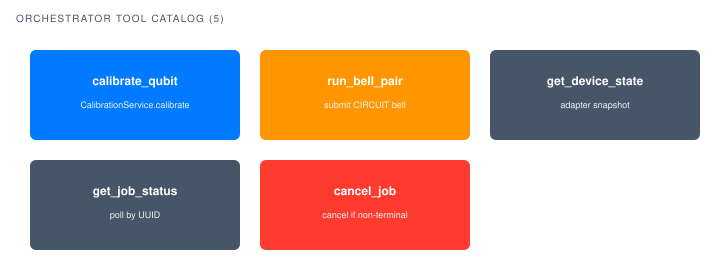
FIG. 1.6The five built-in tools. calibrate_qubit and run_bell_pair are the heavy paths. The others give visibility and guardrails.
A QPUJob is a typed record. It has a JobType (calibration | circuit | diagnostic) and a JobStatus (queued → running → succeeded | failed | cancelled). The adapter owns submission and polling. An InMemoryJobStore exists as a seam for durable history later. Jobs survive a UI refresh for the lifetime of the API process.
Calibration is measure → decide → apply → remeasure. Continue until best_fid ≥ threshold or iterations end. That loop makes an agent interface viable. Each step has a typed result, a latency sample, and a fidelity point the UI can plot. Without the loop, “calibrate” is a fire-and-forget RPC with no story. Every apply goes through QPUAdapter.apply_calibration_update — the seam in FIG. 1.5.
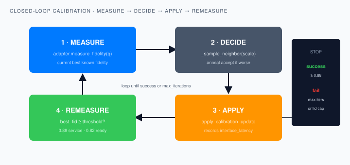
FIG. 1.7Closed-loop calibration. Interface latency is sampled on every apply. time_to_calibrated is wall time to success. success_rate counts attempts.
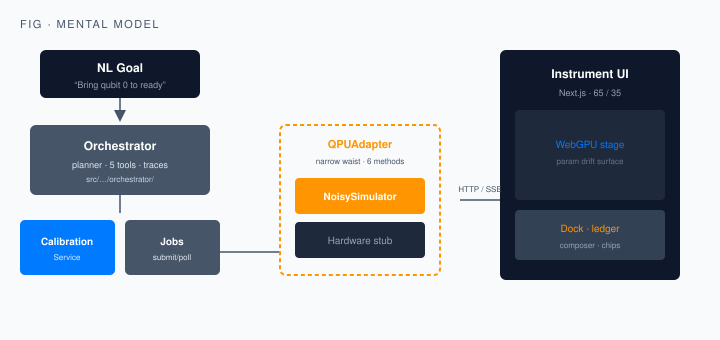
FIG. 1.8Software stack map: NL goal → orchestrator → calibration/jobs → QPUAdapter → simulator or stub. UI talks HTTP/SSE to the control plane.
Two predicates matter. Device readiness (is_ready) requires every qubit’s readout fidelity ≥ 0.82. Calibration success requires the service’s best fidelity ≥ 0.88 (default). A device can be “ready” by the weak predicate while a strict calibration goal still runs. The UI shows both: READY/CAL NEEDED in the toolbar, and the climb HUD threshold line at 0.88. The stage’s 3D device panel (tab device) gives a spatial reading of the same health story. The dock ledger narrates that story in tool traces.
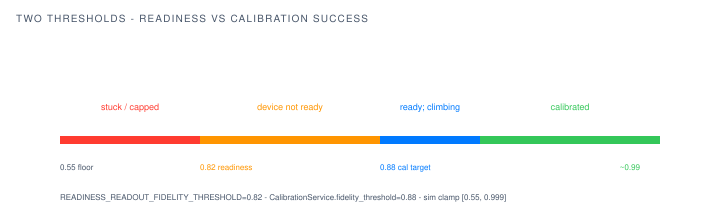
FIG. 1.9The fidelity number line. The simulator clamps reported fidelity to [0.55, 0.999]. Demo caps can pin the ceiling near 0.69 to force failure.
Sources. adapter/base.py (QPUAdapter); adapter/noisy_sim.py; orchestrator/orchestrator.py (tools, ToolTrace); orchestrator/planner.py (plan_from_goal); models/types.py (Job*, READINESS_*); calibration/service.py; ui/app/page.tsx; ui/components/viz/Device3D*.tsx. Architecture literature: P. Krantz et al., Appl. Phys. Rev. 6, 021318 (2019), https://arxiv.org/abs/1904.06560 (FIGS. 1.1–1.3); IBM Qiskit Pulse, https://docs.quantum.ibm.com/api/qiskit/0.46/pulse (FIGS. 1.3, 1.5); N. Wittler / M. Werninghaus et al., Phys. Rev. Applied 15, 034080 (2021) (FIG. 1.4); Keysight, “Characterizing Superconducting Qubits,” https://www.keysight.com/us/en/assets/3120-1387/application-notes/Characterizing-Superconducting-Qubits.pdf (FIGS. 1.2–1.3).
This part states why an NL-goal and tool-using agent layer on a narrow QPU adapter is the right seam for calibration-heavy quantum ops. It also states where this system’s honesty line cuts. It is the intellectual core of the book.
Quantum hardware drifts. Before a circuit is worth running, someone — human or agent — must decide whether to calibrate, which knobs to move, whether the move helped, and how that correlates with downstream job quality. Vendor pulse APIs expose the knobs. They do not expose the decision loop as a first-class, observable object. Chat-only LLM UIs expose language. They do not expose continuous detuning, fidelity climb, or a tool ledger operators can audit.
The AI→QPU integration layer asserts a third surface: goals in, typed tool traces out, device physics behind an adapter. Calibration is not a side effect of “run circuit”. It is an explicit tool with a success predicate and three metrics.
Bare pulse APIs are necessary and not enough. They are the contract a driver must honour (load waveforms, arm triggers, commit cal tables). They are the wrong API for an agent that reasons in tasks: “bring Q0 to ready”, “don’t run Bell until ready”, “cancel the stuck diagnostic”. Agents need a small catalog of tools with stable names and JSON-shaped results. Humans need the same catalog as chips and a composer, not as a 200-method SDK.
This system’s planner is deliberately simple and deterministic. That is a feature for a founder demo: the mapping from goal text to tools is auditable in one function. When CONDUCTOR_ENABLE_LLM=1, an optional OpenAI planner may emit the same ToolCall schema. The execution path, traces, and metrics do not change. The interface’s value is the tool surface and the loop, not the quality of the NL parser.
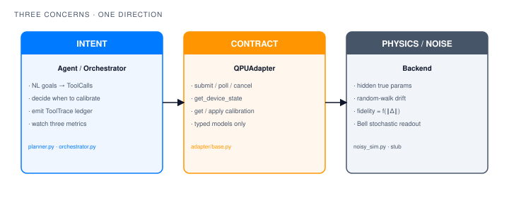
FIG. 2.1Three concerns, one direction. Intent (agent) decides. Contract (adapter) admits only typed operations. Physics/noise (backend) is replaceable.
Separating the three layers is the design claim.
QPUAdapter: six methods. Anything that can sit under those methods — noisy sim today, AWG driver tomorrow — is a valid backend. The factory (adapter/factory.py) is the only place that chooses.This separation lets a founder say: “keep the UI and the orchestrator; swap the adapter.” Without it, every UI widget hard-codes simulator assumptions. The project then fails at the first real fridge.
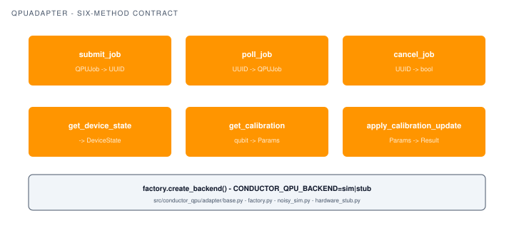
FIG. 2.2The six-method waist. submit/poll/cancel for jobs; get_device_state for health; get/apply calibration for the loop.
Open-loop “set these params” is not enough for agents. Agents need a stop condition and a progress signal. The CalibrationService supplies both: a threshold (default 0.88) and a per-iteration fidelity history. The algorithm is gradient-free on purpose — coordinate jitter with an annealing-flavoured acceptor — because this system’s job is to exercise the control-plane loop, not to win a tuner bake-off. Strategy objects can replace the sampler later. The metrics and traces stay.
Each apply samples interface_latency. Successes accumulate time_to_calibrated. Attempts accumulate the success rate. Those three numbers are the dials a skeptical quantum+ML founder should watch in the demo. If they move for the wrong reasons (or never move), the loop is fake.
FIG. 2.3Viability diagram: without remeasurement against an explicit threshold, calibration is not an agent tool — it is a hope.
Trust in a control plane is not a green checkmark. It is a set of surfaces an operator can reconcile:
get_device_state.get_detuning exposes |applied − true| on the sim (the problem calibration solves). The WebGPU surface places cyan (true) and amber (applied) markers on a Δfreq × Δamp landscape.If any one of these is missing, agents can lie politely. With all four, a failure (fid cap, max iters, stub backend) is legible.
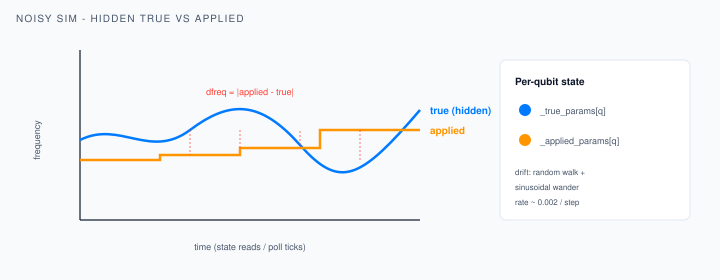
FIG. 2.4Drift model on the noisy simulator. True params wander. Applied params step when calibration commits. Detuning is the gap.
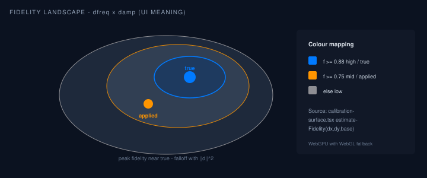
FIG. 2.5What the instrument stage means. The landscape peaks at the hidden true target. Colour bands follow the iOS palette thresholds.
Chat is a fine composer. It is a poor primary surface for a drifting physical system. Quantum ops need continuous state in the visual field: readiness, temperatures, detuning, the spatial relationship of applied vs true. A chat transcript buries those in prose and scrolls them away. The system’s UI makes the stage the hero (~65% of the vertical field, full-bleed under the dock) with tabs for the WebGPU drift landscape and the 3D device panel. Language stays in a bottom-third progressive dock (~33vh) with chat bubbles, expanded suggestion chips (Calibrate Q0, Bell pair, Q0 readiness, Device status, Improve Bell, Diagnose Q0), and a high-contrast composer flush at the bottom. Frost uses a dedicated .stage-blur sibling with solid stacked bands (no backdrop-filter on the dock) so Safari keeps the upper panes sharp.
Details expand in-rail. Nothing steals the stage with a modal. ⌘K is available for power users but does not animate open (Emil Kowalski skill constraint). Toasts (Sonner) confirm terminal outcomes without becoming the narrative channel.
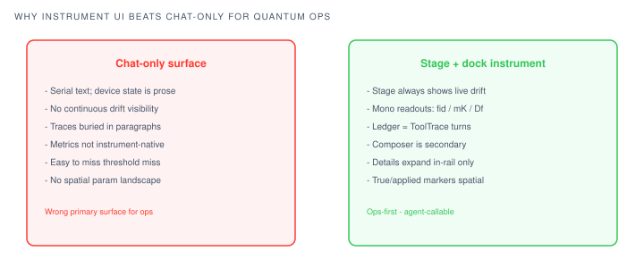
FIG. 2.6Chat-only vs instrument. The right column is what this system ships in ui/app/page.tsx.
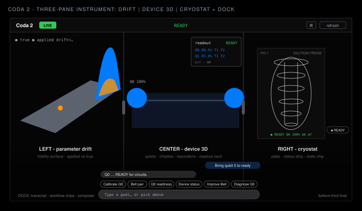
FIG. 2.7Layout sketch of the instrument: frosted toolbar, stage with HUD, progressive-blur dock with ledger and composer.
On a real QPU, the following change — and the design claims they can change behind the adapter without rewriting the orchestrator or UI:
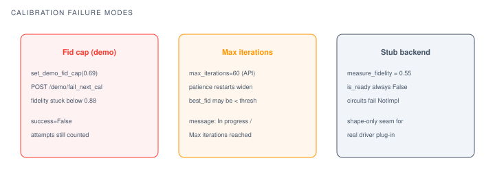
FIG. 2.8Failure modes the interface must render honestly: demo fidelity cap, max-iteration exhaustion, and the always-cold hardware stub.
The interface works because it (1) lifts NL goals into a tiny tool catalog, (2) confines device diversity to a six-method adapter, (3) makes calibration a closed loop with explicit thresholds and metrics, (4) publishes trust surfaces (fidelity, mK, drift, 3D device view, ledger), and (5) uses an instrument UI that keeps physics in the visual field while language stays secondary. Everything else in this book is the engineering of that claim on main @ b05005c.
Sources. README.md (thesis; real vs simulated); adapter/base.py; adapter/noisy_sim.py; adapter/hardware_stub.py; adapter/factory.py; calibration/service.py; observability/metrics.py; orchestrator/*.py; api/server.py; ui/app/page.tsx; ui/components/viz/calibration-surface.tsx; ui/lib/api.ts
Six mid-century plates. Each figure has a caption and a short explanation. A CEO or engineer can read each once. The visual language matches the cover: seafoam, olive, translucent blues, one red accent, extended sans, geometric clarity.
These plates restate the system claim without dark UI chrome. Natural language becomes typed decisions. Decisions become numbers. Numbers cross a narrow adapter firewall into replaceable physics. Fidelity and traces flow back into an instrument. The stage (physics) stays above the dock (agency).
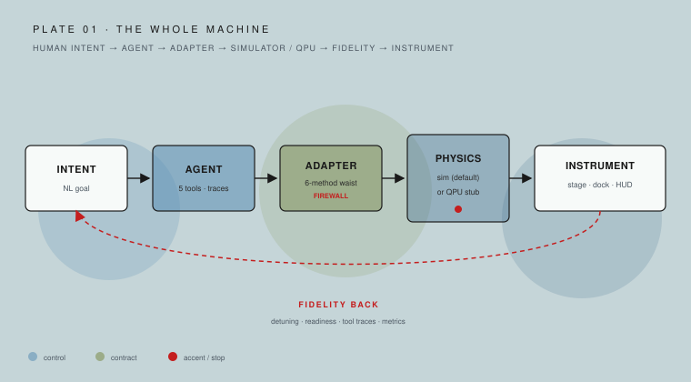
PLATE 01The whole machine — intent to instrument, with fidelity back.
An operator states a goal. An agent maps it onto five tools and emits traces. The adapter is the waist: only six typed methods reach the backend. The backend may be the noisy simulator (default) or a hardware-shaped stub. Results — fidelity, detuning, readiness — return into the instrument UI. The human can see whether the loop worked. The dashed red arc is the product feedback path.
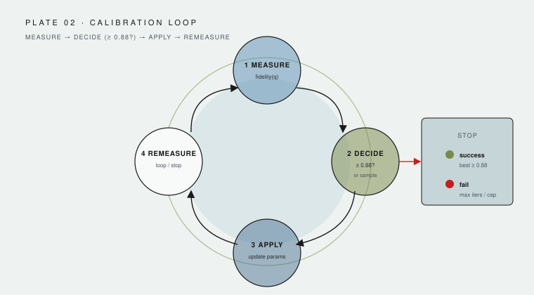
PLATE 02Closed-loop calibration — measure, decide against 0.88, apply, remeasure.
Calibration is viable as an agent tool only because it is a loop. Measure fidelity. Decide whether best fidelity has crossed the service threshold (0.88) or whether to sample a neighbor. Apply an update through the adapter (this samples interface latency). Remeasure. Exit on success, exhausted iterations, or a demo fidelity cap. Hardened calibration (PR #2) widens the sim kernel and strengthens early exploration. Founder-demo seeds converge. The adapter seam does not change.
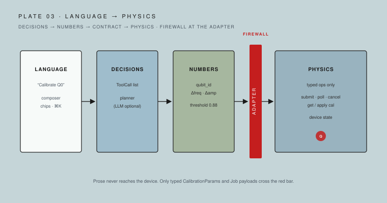
PLATE 03Language → decisions → numbers → contract → physics. Firewall at the adapter.
Prose stops at the red bar. The planner (deterministic by default; optional LLM behind CONDUCTOR_ENABLE_LLM) turns a goal into ToolCalls. Tools produce numbers — qubit ids, parameter deltas, thresholds. Only those typed payloads cross the QPUAdapter. That firewall lets backends swap without rewriting the agent. It also stops the agent from inventing illegal pulse calls.
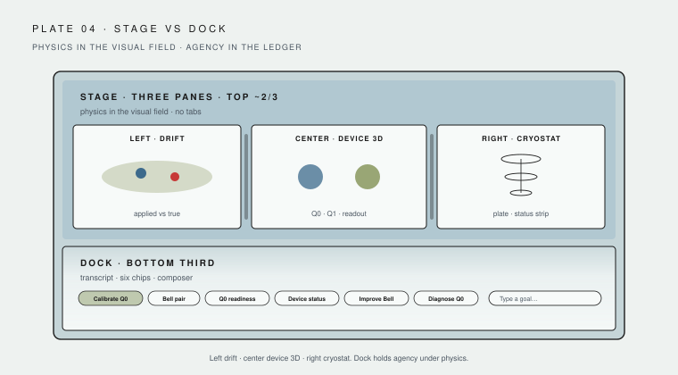
PLATE 04Stage holds physics; dock holds agency. On current main the stage is three panes — drift | device 3D | cryostat — with two resizable splitters. No tabs.
Chat is a fine composer. It is a poor primary surface for a drifting device. The instrument keeps continuous state in the visual field. The stage shows three panes at once. Left: a high-contrast drift grid, coplanar with the fidelity surface, with true/applied markers. Center: the 3D device (qubits, chiplets, resonators) with a readout card for fidelity, T1, T2, and mK. Right: the isometric dilution-fridge plate with a status strip and the state chip. Two iPadOS Split View–style separators, with capsule handles on hover, resize the panes. There is no glass inset and no tab flip. PR #2 first used tabs labeled drift | device. That control is past. The device and cryostat panes are UI. They are not a fridge sensor. The dock over the bottom-third frost holds the transcript, workflow chips, and composer — agency under physics, not instead of it. See FIG. A.0 for the live screenshot.
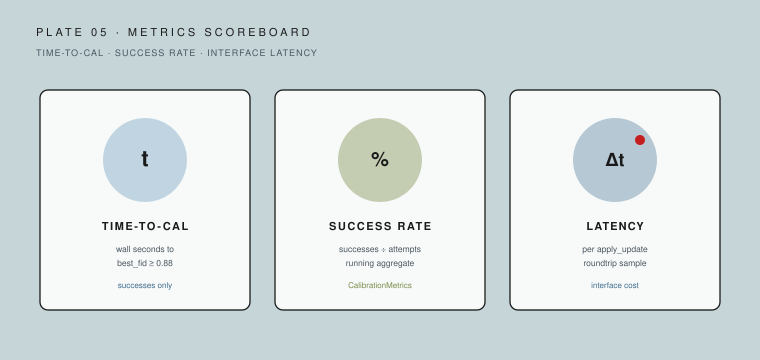
PLATE 05The three founder-facing dials: time-to-cal, success rate, interface latency.
If calibration is a product, its cost must be observable. Time-to-calibrated is wall seconds from loop start to best fidelity ≥ threshold (successes only). Calibration success rate is successes over attempts. Interface latency is the seconds per apply_calibration_update roundtrip. CalibrationService owns the aggregates. The HTTP /metrics surface rolls percentiles for operators and demos.
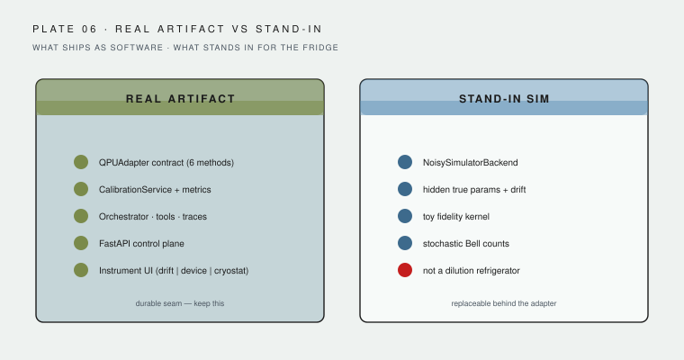
PLATE 06Real software artifact versus the stand-in noisy simulator.
Keep the left column. The adapter contract, calibration loop, orchestrator traces, FastAPI plane, and instrument UI (including the 3D device panel) are the durable artifact. The right column is honest scaffolding: a toy 1–2 qubit model with hidden true parameters, random-walk drift, and a climbable fidelity kernel — not a fridge, not an AWG, not a pulse compiler. A shaped stub documents the driver shape and refuses real work. Replace the stand-in behind the same six methods.
Sources. adapter/base.py; adapter/noisy_sim.py; calibration/service.py; orchestrator/*; api/server.py; ui/app/page.tsx; ui/components/viz/calibration-surface.tsx; ui/components/viz/Device3D*.tsx (PR #2); cover palette from assets/cover-bloch.svg. Part 1 architecture plates: gen_qpu_plates.py.
The system is a FastAPI control plane process plus a Next.js instrument client. Between them: REST and SSE. Under the API sit the orchestrator, calibration service, job store, and a backend. An environment variable selects the backend.
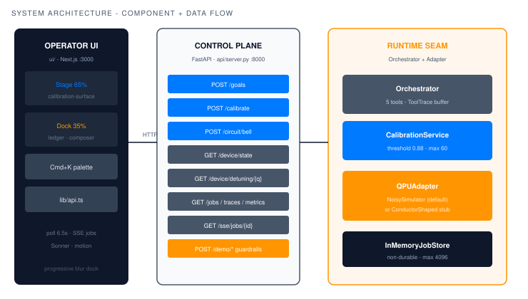
FIG. 3.1Component diagram. UI on :3000; API on :8000; runtime seam holds Orchestrator, CalibrationService, QPUAdapter, InMemoryJobStore.
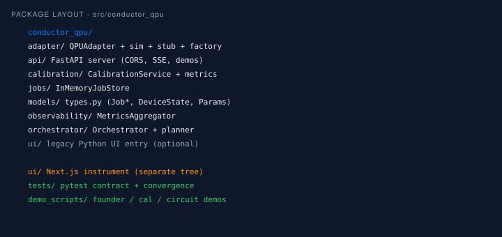
FIG. 3.2Package layout under src/conductor_qpu and the sibling ui/ tree.
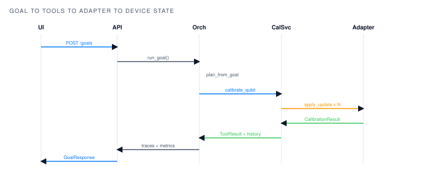
FIG. 3.3Request path for a calibration goal from UI through API, orchestrator, calibration service, and adapter.
Two processes in development:
python -m conductor_qpu.api (Makefile run-api) — uvicorn serving conductor_qpu.api.server:app on 0.0.0.0:8000.cd ui && npm run dev (Makefile run-ui-dev) — Next.js on :3000. CORS on the API allows localhost:3000.Python demos (make demo, make founder-demo) construct adapter + calibration + orchestrator in-process and need no HTTP server.
Module import of api/server.py builds singletons:
_backend = create_backend() # env CONDUCTOR_QPU_BACKEND
_calibration = CalibrationService(
adapter=_backend,
fidelity_threshold=0.88,
max_iterations=60)
_job_store = InMemoryJobStore()
_orchestrator = Orchestrator(
adapter=_backend,
calibration=_calibration,
job_store=_job_store)
_metrics = MetricsAggregator()
There is no dependency-injection container. Tests construct their own graphs. The UI never imports Python — it speaks HTTP via ui/lib/api.ts.
All state is in-memory for this prototype:
NoisySimulatorBackend._job_store or stub equivalent).InMemoryJobStore (bounded to 4096) — present for the seam; the API’s /jobs list currently reads the backend’s list_recent_jobs._last_traces buffer — last goal’s traces.| CONDUCTOR_QPU_BACKEND | CLASS | BEHAVIOUR |
|---|---|---|
| sim (default) | NoisySimulatorBackend | 2-qubit drifting toy; full demo path |
| stub | hardware | shaped | conductor | ConductorShapedAdapter | Shape-only; circuits fail; fidelity 0.55; never ready |
Table 3.1. Factory mapping in adapter/factory.py.
Sources. api/server.py; adapter/factory.py; jobs/store.py; ui/lib/api.ts
This part lists every HTTP endpoint from src/conductor_qpu/api/server.py. This book describes main @ b05005c. PR #13–#18 change stage framing only. They do not revise this route list. Schemas are Pydantic v2 models or ad-hoc dicts as noted. Errors use FastAPI HTTPException.
docs_url="/docs", title field still reads the package-era string “Conductor QPU”, version 0.1.0 (the product name is Coda 2).Returns {status: ok, service: conductor-qpu}. Used by the UI connection check.
Returns the exact predicate name all_qubits_readout_fidelity_above, threshold 0.82, and description string. Founders can point at numbers, not vague claims.
Body GoalRequest { goal: str }. Runs _orchestrator.run_goal, records latencies into MetricsAggregator, returns GoalResponse { goal, results[], traces[], metrics }. Each result is {ok, data, latency_s, error}. Traces are the structured ToolTrace dicts for this execution.
Body { qubit_id?: int=0, target_fidelity?: float }. Calls _calibration.calibrate directly (bypasses planner, still uses the service). Records fidelity in aggregator. Returns success, fidelity, iterations, duration_s, params subset, history.
Body { shots?: int=1024, qubits?: [0,1] }. Builds a CIRCUIT QPUJob, submits to backend, polls once, returns job_id, counts, metrics — or error.
Snapshot: is_ready, readiness_score, qubits, temperatures_mk, coherence_us, readout_fidelity, notes, timestamp, readiness_predicate object.
Returns detuning dict (frequency_error, amplitude_error, phase_error, readout_error_delta) plus applied params. 404 if unknown qubit. On the stub this raises NotImplementedError → 500 unless caught; the sim implements it.
Query limit (default 50). Lists recent jobs from backend list_recent_jobs. Documented non-durable.
400 invalid UUID; 404 unknown. Returns status, type, timestamps, result data, metrics, error.
Most recent orchestrator tool traces (get_last_traces()).
Union of orchestrator.get_metrics(), MetricsAggregator.snapshot(), and calibration.metrics.to_dict().
Server-Sent Events. Polls backend every 200 ms, emits event: update when status changes, stops on terminal status, or event: timeout after ~24 s (120 iterations). event: error if job missing.
If backend has set_demo_fid_cap, sets cap to 0.69 so subsequent calibration cannot reach 0.88. Returns {ok, fid_cap, note}.
Starts a long-running diagnostic that stays RUNNING until cancel (sim helper). Returns {job_id}. Used to demo cancel in the UI.
| SITUATION | STATUS | DETAIL |
|---|---|---|
| Malformed job UUID | 400 | invalid job_id |
| Unknown job | 404 | job not found |
| Unknown qubit (detuning) | 404 | ValueError text |
| Backend down (UI) | — | UI sets backendDown; toast; banner “make run-api” |
| Calibration capped | 200 with success:false | Not an HTTP error — domain failure in body |
| Stub circuit | job FAILED | error explains hardware not connected |
Table 4.1. Error and failure signalling. Domain failures are often 200 + ok:false / success:false so agents can read them as tool results.
Sources. api/server.py (all routes); ui/lib/api.ts (client mapping)
The adapter is the narrow waist. This part documents the abstract contract, the noisy simulator’s dynamics, and the hardware-shaped stub.
FIG. 5.1Contract reminder.
Abstract methods: submit_job, poll_job, cancel_job, get_device_state, get_calibration, apply_calibration_update. Synchronous by prototype choice; production ports may go async without changing the orchestrator’s conceptual model if a thin sync wrapper remains.
| FIELD | ROLE |
|---|---|
| qubit_id | Which qubit the params apply to |
| frequency | Fake GHz-scale drive frequency |
| amplitude | Drive amplitude |
| phase | Radians |
| t1, t2 | Relaxation / dephasing (µs, theatrical) |
| readout_error | Bit-flip probability on measurement |
Table 5.1. CalibrationParams fields (models/types.py). Units are illustrative; only relative distance to true params matters on the sim.
DeviceState carries temperatures_mk, coherence_us (T1,T2) per qubit, readout_fidelity, is_ready, notes. readiness_score() averages readout fidelities into 0..1.
Construction: num_qubits clamped to 1..2, seed (default 42), drift_rate (default 0.002). Maintains _true_params and _applied_params per qubit, an RLock, and an in-memory job store.
_apply_drift runs on state reads / polls when ≥50 ms elapsed. True params take a Gaussian step scaled by drift_rate and a sinusoidal term sin(now*0.7+q), with clamps per field. This is the lab dynamic the UI visualises: calibration chases a moving target.
_fidelity_from_params builds a squared-error penalty across frequency, amplitude, phase, T1/T2 shortfalls, and readout error, then maps through 0.94*exp(-1.8*err)+0.05, clamped to [0.55, 0.999]. Optional _demo_fid_cap can further ceiling the value for failure demos.
_simulate_bell_readout draws ideal 00/11, applies readout flips, and depolarises by contrast derived from joint fidelity. Returns counts dict.
Calibration jobs run a small local loop (threshold 0.88, max 25) when submitted directly; the preferred path is the CalibrationService via the orchestrator (full metrics + traces). Circuit jobs run Bell (or stub success for unknown circuit names). Cancel flips non-terminal jobs to CANCELLED.
FIG. 5.2True vs applied over time on the simulator.
Documents what a real AWG/DAC/FPGA driver would look like. Circuits fail with an explicit NotImplemented error string. Calibration “succeeds” at fidelity 0.90 but notes that nothing was committed. is_ready is always False. measure_fidelity returns 0.55. get_detuning raises NotImplementedError. Use CONDUCTOR_QPU_BACKEND=stub and make founder-demo-stub to exercise the seam.
Sources. adapter/base.py; adapter/noisy_sim.py; adapter/hardware_stub.py; adapter/factory.py; models/types.py; tests/test_adapter_contract.py; tests/test_adapter_selection.py
CalibrationService is an iterative, gradient-free tuner that records the three founder metrics. This part specifies the algorithm, thresholds, failure modes, and what tests assert.
FIG. 6.1Metric definitions again — they are the product dials.
FIG. 6.2Loop structure as implemented in calibration/service.py.
temp = max(0.015, 0.55*(1-progress)).adapter.apply_calibration_update(candidate); record interface latency.exp((f-best)/temp).| PARAMETER | API DEFAULT | NOTES |
|---|---|---|
| fidelity_threshold | 0.88 | Planner default target matches |
| max_iterations | 60 | Tests may use 30–80 |
| patience | 12 | Service default |
| seed | 123 | Service default RNG |
| READINESS threshold | 0.82 | Separate predicate on DeviceState |
Table 6.1. Thresholds and loop limits.
FIG. 6.3Three classes of failure the demos and tests cover.
POST /demo/fail_next_cal or set_demo_fid_cap. Service reports success=False; fidelity stays below 0.88; attempts still increment.tests/test_calibration_converges.py asserts fidelity can reach ≥0.80 on the noisy sim with threshold 0.86, and that metrics fields are populated across multi-qubit attempts. tests/test_failure_paths.py asserts capped runs end with success=False and that long-running jobs cancel to CANCELLED. Demos print the three metrics to stdout; they do not claim statistical significance across seeds.
Sources. calibration/service.py; observability/metrics.py; tests/test_calibration_converges.py; tests/test_failure_paths.py; demo_scripts/run_calibration_demo.py; demo_scripts/founder_demo.py
The orchestrator is a thin agent runtime. It registers tools, calls tools, runs goals through a planner, and exposes traces and metrics. No LLM is required on the default path.
FIG. 7.1Tool catalog.
| TYPE | FIELDS | ROLE |
|---|---|---|
| ToolCall | tool, args | Planner output step |
| ToolResult | ok, data, latency_s, error? | Tool return value |
| ToolTrace | timestamp, tool, args, latency_s, ok, summary | UI timeline / ledger observability |
Table 7.1. Orchestrator dataclasses (orchestrator/orchestrator.py).
Summaries are derived: fidelity=…, 00/11 counts, ready=… score=…, or first keys. Traces reset at the start of each run_goal.
plan_from_goal normalises whitespace/case and matches keywords:
| INTENT KEYWORDS | TOOL PLAN |
|---|---|
| bring, calibrat, ready, tune | calibrate_qubit(qubit_id parsed 0|1, target 0.88 or 0.92 if high/strict) |
| bell, circuit, entangl, pair | run_bell_pair(shots 1024|256 few/quick|4096 many/precise) |
| state, health, status, ready?, temperature | get_device_state |
| cancel … | cancel_job(job_id token) |
| default (no match) | get_device_state then calibrate_qubit(0, 0.85) |
Table 7.2. Deterministic planner mapping (planner.py).
plan() tries maybe_llm_plan first when CONDUCTOR_ENABLE_LLM is truthy and openai imports; otherwise plan_from_goal. LLM failures return None and fall through. The API’s POST /goals uses Orchestrator.run_goal, which imports plan_from_goal as its default planner function (note: the server also imports plan but run_goal defaults to plan_from_goal unless a planner callable is passed).
If a step’s tool is calibrate_qubit or run_bell_pair and ok is False, run_goal breaks the plan early. Visibility tools do not abort the sequence.
get_metrics() returns calibration metrics dict, per-tool call counts and avg latency, optional adapter get_stats() (total_jobs, total_shots on the sim), and an interface_latency_p50_hint aliased from avg interface latency.
Sources. orchestrator/orchestrator.py; orchestrator/planner.py
The UI is a Next.js App Router instrument panel. It is not a chat app with a chart widget. The stage is the product: three panes — drift | device 3D | cryostat. The dock is the agent surface.
FIG. 8.1Screenshot: the three-pane instrument at rest. Left: parameter-drift landscape (orange applied, blue true). Center: 3D device with qubit spheres and the readout card. Right: isometric dilution-fridge plate with its status strip and the StageStateChip. Bottom: dock with empty-state hint, six workflow chips, and the composer.
FIG. 8.2Schematic of the same chrome. Toolbar on top. Three panes separated by two splitters. Dock over the bottom-third frost.
Current UI (main, three-pane chrome through PR #25–#27): three panes at rest. Left is a high-contrast drift grid, coplanar with the fidelity surface. Center is Device3D: qubit spheres, chiplets, resonators, and a readout card (Q0/Q1 fidelity, T1, T2, err, mK). Right is the isometric cryostat plate with a status strip (state · Q0 % · mK · Δf). Two iPadOS Split View–style separators resize the panes; hover shows a capsule drag handle; each pane keeps a minimum width (roughly 22–28% of the stage). No traffic lights. No glass inset. No tabs. Earlier releases shipped a single drift stage (65/35) and then a two-pane drift | device split; both are historical.
FIG. 8.3Screenshot crop: dock region — empty-state hint, six workflow chips (Calibrate Q0 · Bell pair · Q0 readiness · Device status · Improve Bell · Diagnose Q0), and the high-contrast composer with ⌘K.
FIG. 8.4Screenshot: a Calibrate Q0 turn on the three-pane stage. All three panes stay live. The you-bubble sits right; the agent reports fidelity and readiness. The Calibrate Q0 path is unchanged.
h-screen w-screen).StageStateChip (OFFLINE → DRIFT → CALIBRATING → RUNNING → READY / FAILED)..stage-blur, no backdrop-filter) so the canvases extend underneath and the top two-thirds stay sharp.calibration-surface.tsx builds a PlaneGeometry heightfield from estimateFidelity(dx,dy,base), peaked at the true offset implied by live detuning. Cyan marker = true; amber = applied at origin of the applied frame. Colours: ≥0.88 blue, ≥0.75 orange, else gray. On current main the left grid is high contrast and shares the tilted group with that surface, so the grid and the mountain sit coplanar. WebGPU via async three/webgpu renderer when navigator.gpu exists; else WebGL + banner.
FIG. 8.5Semantic map of the stage surface.
Workflow chips: Calibrate Q0, Bell pair, Q0 readiness, Device status, Improve Bell, Diagnose Q0 — each submits a goal string through api.postGoal. Turns append to local state with status running→succeeded/failed, traces, fidelityHistory, bellCounts. The dock transcript stacks you/agent bubbles above chips; selecting a turn expands details (fidelity climb, tool traces, optional counts). The primary operator path stays first-class: a natural-language goal or a chip, then calibrate, then READY, then a Bell circuit.
⌘K opens cmdk actions: goals, refresh, force fail next calibration, start long job. Demo actions hit /demo/* endpoints. Cancel uses goal cancel {jobId} or stop button on running jobs.
Device + metrics refresh every 6.5 s when connected. Active running jobs poll every 850 ms; SSE also attaches via EventSource to /sse/jobs/{id}.
| CONCERN | LIBRARY |
|---|---|
| Command palette | cmdk (no open animation) |
| Toasts | sonner |
| Motion | motion (transform/opacity, ease [0.23,1,0.32,1]) |
| Charts | recharts |
| 3D | three + @react-three/fiber + drei |
| State | zustand |
| Primitives | shadcn/ui + Radix |
Table 8.1. UI dependencies (see ui/README.md).
Sources. ui/app/page.tsx; ui/components/viz/calibration-surface.tsx; ui/components/viz/device-3d.tsx; ui/components/viz/cryostat-plate.tsx; ui/components/stage/stage-state-chip.tsx; ui/components/command/command-palette.tsx; ui/lib/api.ts; ui/README.md
Install, run, demo, and test this system on a developer machine. Python ≥3.11, Node ≥18, no API keys required for the default path.
git clone https://github.com/mariodelgado/ai-to-qpu-spike cd ai-to-qpu-spike make setup # pip install -e ".[dev]" + cd ui && npm install
# Terminal A make run-api # FastAPI http://localhost:8000 # Terminal B make run-ui-dev # Next.js http://localhost:3000 # open http://localhost:3000
Optional: NEXT_PUBLIC_API_BASE=http://localhost:8000. Production UI: make run-ui (build + start).
| TARGET | ACTION |
|---|---|
| setup | Python editable install + npm install |
| install | pip install -e ".[dev]" |
| demo | calibration + circuit Python demos |
| demo-calibration / demo-circuit | Individual demos |
| founder-demo | Scriptable orchestrator demo |
| founder-demo-stub | Same against ConductorShapedAdapter |
| test | pytest tests/ -v |
| lint / format | ruff check / format |
| run-api | uvicorn API :8000 |
| run-ui / run-ui-dev | Next.js prod / dev :3000 |
| clean | Build artifacts, caches, demo_outputs |
Table 9.1. Makefile surface.
Expected areas: adapter contract, adapter selection via env, API happy path, calibration convergence, failure paths (cap, cancel). Guarantees stated in README: pytest green, make demo works, offline, no keys.
| VARIABLE | DEFAULT | EFFECT |
|---|---|---|
| CONDUCTOR_QPU_BACKEND | sim | sim vs stub/hardware/shaped/conductor |
| CONDUCTOR_ENABLE_LLM | 0 | Enable optional OpenAI planner |
| CONDUCTOR_LLM_MODEL | gpt-4o-mini | Model when LLM planner on |
| NEXT_PUBLIC_API_BASE | http://localhost:8000 | UI API base |
| FOUNDER_DEMO_FAIL | — | If 1, founder_demo caps fidelity |
Table 9.2. Environment knobs.
Sources. Makefile; pyproject.toml; ui/package.json; README.md
Step sequences for the founder demo paths. Pair with the screenshots in Part 8.
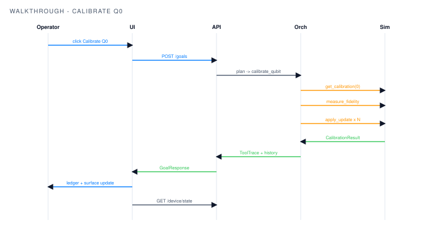
FIG. 10.1Sequence: Calibrate Q0 from chip click through GoalResponse and surface update.
calibrate_qubit summary fidelity=…).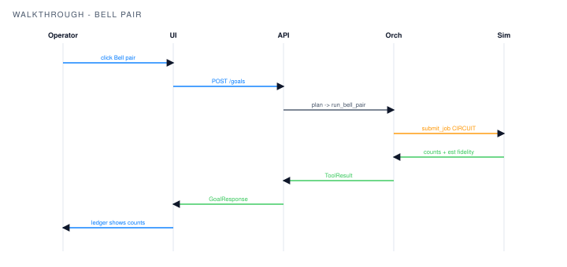
FIG. 10.2Sequence: Bell pair.
run_bell_pair; adapter returns counts.make founder-demo # or CONDUCTOR_QPU_BACKEND=stub make founder-demo-stub python -m demo_scripts.founder_demo --fail
Prints steps, traces, three metrics, readiness; exits 0.
Sources. README.md (2-minute founder demo); demo_scripts/founder_demo.py; ui/app/page.tsx (submitGoal, commandActions)
conductor-qpu 0.1.0, MIT, requires Python ≥3.11. Runtime deps: numpy, scipy, fastapi, uvicorn, pydantic, httpx, python-multipart. Dev: pytest, pytest-asyncio, ruff, mypy. Optional llm: openai. Scripts: conductor-qpu-api, conductor-qpu-ui.
| TERM | DEFINITION |
|---|---|
| Adapter | QPUAdapter implementation sitting under the control plane |
| Applied params | Last calibration vector written to the backend |
| True params | Hidden simulator state; source of detuning |
| Detuning | Per-field |applied − true| exposed for teaching/ops |
| Goal | NL string mapped to ToolCalls |
| ToolTrace | Structured record of one tool invocation |
| Readiness | all readout_fidelity ≥ 0.82 |
| Calibration success | best_fid ≥ service threshold (0.88 default) |
| time_to_calibrated | Wall time to successful threshold cross |
| interface_latency | apply_calibration_update roundtrip sample |
| Stage | Primary WebGPU/WebGL visual surface |
| Dock | Bottom progressive-blur agent/ledger band |
| Stub | ConductorShapedAdapter — shape only, not connected |
Table G.1. Glossary.
| FIGURE | TITLE |
|---|---|
| A.1–A.2 | Front plates: who this is for; four tasks |
| A.3–A.7 | Front stills: idle home, typed goal, READY, Bell ledger, instrument map |
| R.1 | The three metrics |
| C.1 | Colour legend |
| 1.1–1.5 | QPU primer plates: Bloch, control/readout, why calibrate, stack, our seam |
| 1.6–1.9 | Tools, cal loop, software stack map, thresholds |
| 2.1–2.8 | Theory diagrams (layers, contract, loop, drift, surface, UI rationale, layout, failures) |
| D.01–D.06 | Mid-century plates: whole machine, cal loop, language firewall, stage/dock, metrics, real vs sim |
| 3.1–3.3 | Architecture, package, dataflow |
| 5.1–5.2 | Adapter contract, drift |
| 6.1–6.3 | Metrics, loop, failures |
| 7.1 | Tool catalog |
| 8.1–8.5 | UI layout, screenshots, surface semantics |
| 10.1–10.2 | Calibrate Q0 and Bell sequences |
Table F.1. Figure index (primary).
This manual describes the AI→QPU integration layer on main @ b05005c (2026-10-03/04 PT, through PR #18). It is a control-plane integration layer with a noisy simulator behind a real seam. The theory of the interface — goals, tools, closed-loop calibration, trust surfaces, instrument UI — is the durable claim. The simulator numbers are not.
Repository. https://github.com/mariodelgado/ai-to-qpu-spike · Engineering Edition · October 2026
A short record of alternatives considered and rejected while shaping the AI→QPU interface. This is part of the theory of the interface. Knowing what was not chosen clarifies what was.
Rejected as the primary architecture. Vendor SDKs expose dozens to hundreds of calls with pulse-level detail. Dumping them into an LLM tool list creates brittle agents that invent illegal parameter combinations and hide calibration as an incidental side effect of “run_experiment”. This system instead offers five tools and a planner, with calibration as an explicit tool that returns history and metrics. A production system may still wrap vendor calls — but behind the adapter, not as the agent’s entire world.
Rejected for ops. Language is excellent for composing goals and explaining failures after the fact. It is poor for continuous physical state. Detuning is a spatial relationship; fidelity climb is a time series against a threshold; readiness is a predicate over multiple qubits. Those belong on an instrument stage. Chat remains available via the composer and ⌘K, subordinated to the stage.
FIG. 2B.1Reprise: chat-only vs instrument — the rejected alternative on the left.
Rejected for this system’s thesis. Advanced tuners matter and should plug in as CalibrationService strategies. Shipping a fancy optimiser first would confuse the demo: founders would argue about acquisition functions instead of asking whether the control plane makes calibration a recurring, observable decision. The gradient-free loop is intentionally simple; the metrics and traces are the product.
Partially rejected. Omniscient detuning is unrealistic for hardware — and the stub correctly refuses it. For teaching and founder demos, exposing get_detuning on the sim makes the problem visible on the stage (cyan vs amber). The honesty line in the README states this clearly: the dynamics are representative; the oracle is not.
Rejected. Offline-first is a constraint of this system: make demo and the UI must work with zero external services. Optional LLM planning is gated. This keeps CI deterministic and founder laptops unblocked.
Concrete JSON shapes as returned by the FastAPI surface. Field names match api/server.py and ui/lib/api.ts.
// request
{ "goal": "Bring qubit 0 to ready" }
// response (shape)
{
"goal": "Bring qubit 0 to ready",
"results": [
{
"ok": true,
"data": {
"fidelity": 0.9012,
"iterations": 14,
"params": {"frequency": 5.02, "amplitude": 0.51, "readout_error": 0.04},
"duration_s": 0.0123,
"history": [[0, 0.71], [1, 0.74], /* … */],
"initial_fidelity": 0.71,
"threshold": 0.88
},
"latency_s": 0.013,
"error": null
}
],
"traces": [
{
"ts": 1727827200.1,
"tool": "calibrate_qubit",
"args": {"qubit_id": 0, "target_fidelity": 0.88},
"latency_s": 0.013,
"ok": true,
"summary": "fidelity=0.9012"
}
],
"metrics": { /* MetricsAggregator.snapshot() */ }
}
{
"is_ready": false,
"readiness_score": 0.812,
"qubits": [0, 1],
"temperatures_mk": {"0": 24.1, "1": 23.8},
"coherence_us": {"0": [41.2, 24.5], "1": [40.1, 23.9]},
"readout_fidelity": {"0": 0.81, "1": 0.814},
"notes": "Calibration recommended",
"timestamp": "2026-10-01T23:00:00.000000",
"readiness_predicate": {
"name": "all_qubits_readout_fidelity_above",
"readout_fidelity_threshold": 0.82,
"description": "All qubits must have readout_fidelity >= threshold."
}
}
{
"qubit_id": 0,
"detuning": {
"frequency_error": 0.0312,
"amplitude_error": 0.014,
"phase_error": 0.08,
"readout_error_delta": 0.01
},
"applied": {
"frequency": 5.0,
"amplitude": 0.48,
"phase": 0.01,
"readout_error": 0.06
}
}
{
"orchestrator": {
"calibration": {
"attempts": 2.0,
"successes": 1.0,
"calibration_success_rate": 0.5,
"avg_time_to_calibrated_s": 0.02,
"avg_interface_latency_s": 0.0001
},
"tools": {
"calibrate_qubit": {"calls": 2.0, "avg_latency_s": 0.015}
},
"adapter": {"total_jobs": 3.0, "total_shots": 1024.0},
"interface_latency_p50_hint": 0.0001
},
"aggregator": {
"interface_latency_ms": {"count": 2, "p50": 12.0, "p95": 15.0},
"fidelity": {"count": 1, "avg": 0.9012, "last": 0.9012},
"job_outcomes": {"succeeded": 0, "failed": 0, "cancelled": 0},
"timestamp": 1727827200.0
},
"calibration": { /* same shape as orchestrator.calibration */ }
}
event: update
data: {"job_id":"…","status":"running","result":null,"metrics":null}
event: update
data: {"job_id":"…","status":"succeeded","result":{"counts":{…}},"metrics":{…}}
event: timeout
data: {"job_id":"…"}
event: error
data: {"error":"not found"}
| ENDPOINT | NOTABLE RESPONSE FIELDS |
|---|---|
| POST /calibrate | success, fidelity, iterations, duration_s, params{qubit_id,frequency,amplitude,readout_error}, history |
| POST /circuit/bell | job_id, counts{00,01,10,11}, metrics{estimated_fidelity,shots,p00,p11} or error |
| POST /demo/fail_next_cal | ok, fid_cap=0.69, note |
| POST /demo/start_long_job | job_id |
Table 4B.1. Direct and demo endpoints — response highlights.
Additional detail on the noisy simulator’s fidelity kernel, drift update, and Bell contrast — enough to reimplement or replace without reading the UI.
Let p be applied params and t true params for qubit q. Define:
df = |p.frequency - t.frequency|da = |p.amplitude - t.amplitude|dp = absolute wrapped phase difference on [0, π]dt1 = max(0, t.t1 - p.t1) / max(1, t.t1) (penalise claiming too-long T1)dt2 analogous for T2dr = |p.readout_error - t.readout_error|Composite error:
err = 0.9*df² + 0.7*da² + 0.5*dp² + 0.35*dt1² + 0.35*dt2² + 0.85*dr² fid = clamp(0.94*exp(-1.8*err) + 0.05, 0.55, 0.999)
Optional demo cap: fid = min(fid, cap) before clamp upper bound still applies via min with cap then clamp.
On each drift application with elapsed dt and steps = max(1, int(dt*20)):
f_drift = drift_rate * (1 + 0.3*sin(now*0.7 + q)) frequency += N(0, f_drift * steps) # clamped [4.2, 5.9] amplitude += N(0, 0.0008 * steps) # clamped [0.25, 0.75] phase += N(0, 0.002 * steps) t1, t2, readout_error similarly with their sigmas and clamps
joint_f = (f0 + f1) / 2 contrast = clamp(0.5 + 0.48*(joint_f - 0.6)/0.4, 0.02, 0.98)
Ideal bits are 00 or 11 with equal probability; readout flips each bit with the applied readout_error; with probability 1 - contrast the outcome is forced to odd parity (01 or 10).
Temperature: 18 + (1-f)*35 + noise mK. Coherence scales with fidelity. Readout fidelity card: 1 - readout_error*(1.3 - 0.3*f) clamped. Ready iff all readout fidelities > 0.82.
FIG. 5B.1Drift cartoon corresponding to §5B.2.
Sources. adapter/noisy_sim.py (_apply_drift, _fidelity_from_params, _simulate_bell_readout, get_device_state)
Exact neighbour sampling and acceptance rules as coded — for anyone replacing the strategy while keeping metrics.
| FIELD | REL STEP (scale>1) | REL STEP (else) | CLAMP |
|---|---|---|---|
| frequency | 0.032 | 0.018 | [4.20, 5.90] |
| amplitude | 0.065 | 0.035 | [0.24, 0.76] |
| phase | 0.28 | 0.28 | [-π, π] |
| t1 | 0.10 | 0.10 | [15, 88] |
| t2 | 0.11 | 0.11 | [10, 68] |
| readout_error | 0.22 | 0.13 | [0.002, 0.16] |
Table 6B.1. _sample_neighbor relative Gaussian scales (multiplied by scale and applied as abs delta).
total_interface_latency_s += latency; latency_samples += 1.attempts += 1.successes += 1; total_time_to_cal_s += duration_s.Implementation notes for the instrument chrome beyond the React tree — so a designer or engineer can preserve the three-pane stage (drift | device 3D | cryostat) over a bottom-third dock.
Progressive blur via backdrop-filter only works if there is content behind the frosted layer. The stage is therefore positionally full-bleed; the dock is an overlay with a gradient mask that is stronger near the composer and fades toward the stage. First paint must never be an empty chat void.
| TOKEN | HEX | USE |
|---|---|---|
| --true / system blue | #007AFF | True marker, high fidelity, goal text accents |
| --applied / system orange | #FF9500 | Applied marker, threshold lines, CAL NEEDED |
| --success | #34C759 | LIVE badge, success fidelity text |
| --fail | #FF3B30 | Failed turns, backend errors |
| label gray | #8E8E93 / zinc | Secondary labels, low fidelity band |
| hairline | white/10 borders | iOS-like separators |
Table 8B.1. iOS system palette as used in UI and diagrams.
Animate only transform/opacity. Ease-out cubic-bezier(0.23, 1, 0.32, 1). ⌘K open has no animation. NumberFlow may be used on metrics cards in alternate layouts; the instrument toolbar uses mono text updates on poll.
On health check failure: connected=false, backendDown=true, red banner “Cannot reach backend — make run-api”, composer disabled, toast on submit failure. This is a control-plane honesty surface: the UI must not pretend the device is live.
FIG. 8B.1Layout reference for chrome work.
What each test module guards. Keep these green when changing the adapter or calibration loop.
| MODULE | ASSERTIONS (SUMMARY) |
|---|---|
| test_adapter_contract.py | Adapter methods exist and behave: submit/poll/cancel, state, calibration apply returns fidelity |
| test_adapter_selection.py | factory env selects sim vs stub |
| test_api_happy_path.py | Health, goals, device, metrics HTTP paths succeed against TestClient |
| test_calibration_converges.py | Service can improve fidelity on noisy sim; metrics populated |
| test_failure_paths.py | Fid cap → success False; long job cancel → CANCELLED |
Table 9B.1. Pytest modules under tests/.
make test # equivalent pytest tests/ -v --tb=short
asyncio mode auto via pyproject. Prefer short tracebacks in CI logs.
demo_scripts/run_calibration_demo.py and run_circuit_demo.py print human-readable climbs and counts. founder_demo.py exercises orchestrator goals end-to-end including optional --fail. They are not substitutes for pytest but catch packaging/import regressions quickly via make demo.
| METHOD | PATH | AUTH | PRIMARY CONSUMER |
|---|---|---|---|
| GET | /health | none | UI connection check |
| GET | /readiness_predicate | none | UI / founders |
| GET | /device/state | none | UI poll 6.5s |
| GET | /device/detuning/{qubit_id} | none | UI drift surface |
| POST | /goals | none | UI composer/chips/⌘K |
| POST | /calibrate | none | Direct/API clients |
| POST | /circuit/bell | none | Direct/API clients |
| GET | /jobs | none | UI job list |
| GET | /jobs/{job_id} | none | UI poll |
| GET | /sse/jobs/{job_id} | none | UI EventSource |
| GET | /traces | none | Debug / UI |
| GET | /metrics | none | UI metrics refresh |
| POST | /demo/fail_next_cal | none | ⌘K demo |
| POST | /demo/start_long_job | none | ⌘K demo |
| GET | /docs | none | OpenAPI Swagger UI |
Table 4C.1. Complete FastAPI route list on server.py.
Illustrative numbers consistent with the model (not a captured golden run). Shows how history, metrics, and UI fields relate.
| STEP | ACTION | FIDELITY | NOTES |
|---|---|---|---|
| 0 | measure initial | 0.72 | history (0, 0.72) |
| 1–3 | wide explores | 0.74–0.79 | some accepts worse via anneal |
| 4–8 | improve | 0.83 | crosses readiness 0.82; service still climbing to 0.88 |
| 9–12 | tighten scale | 0.87 | near threshold |
| 13 | accept | 0.901 | success; break |
Table 10B.1. Illustrative climb. UI threshold line at 0.88; READY may flip earlier based on readout card ≥0.82.
After success: attempts=1, successes=1, calibration_success_rate=1.0, avg_time_to_calibrated_s ≈ duration_s, latency_samples=13. ToolTrace summary fidelity=0.901. Detuning frequency_error should shrink if applied moved toward true.
Under fid cap 0.69: steps continue to max_iterations or patience cycling; best_fid ≤ 0.69; success=False; successes unchanged; attempts still +1; success_rate drops.
FIG. 10B.1Sequence context for the numeric climb.
FIG. 10B.2Where 0.82 and 0.88 sit on the number line during the climb.
How an external agent should call this control plane without treating it as a chatbot.
FIG. 7B.1HTTP dataflow agents should follow.
| SYMBOL / PATH | ROLE |
|---|---|
| conductor_qpu.adapter.base.QPUAdapter | Abstract six-method contract |
| conductor_qpu.adapter.noisy_sim.NoisySimulatorBackend | Default drifting toy device |
| conductor_qpu.adapter.hardware_stub.ConductorShapedAdapter | Shape-only stub |
| conductor_qpu.adapter.factory.create_backend | Env-based backend selection |
| conductor_qpu.calibration.service.CalibrationService | Iterative tuner + CalibrationMetrics |
| conductor_qpu.orchestrator.orchestrator.Orchestrator | Tools + traces + run_goal |
| conductor_qpu.orchestrator.planner.plan_from_goal | Deterministic NL→tools |
| conductor_qpu.api.server.app | FastAPI application |
| conductor_qpu.models.types | Job*, DeviceState, CalibrationParams, thresholds |
| conductor_qpu.observability.metrics.MetricsAggregator | Rolling latency/fidelity samples |
| conductor_qpu.jobs.store.InMemoryJobStore | Non-durable job history seam |
| ui/app/page.tsx | Instrument composition |
| ui/components/viz/calibration-surface.tsx | WebGPU/WebGL drift landscape |
| ui/lib/api.ts | Typed HTTP client |
| READINESS_READOUT_FIDELITY_THRESHOLD | 0.82 |
| CalibrationService.fidelity_threshold | 0.88 (API) |
Table 11B.1. Path and symbol index.
| FIELD | VALUE |
|---|---|
| Title | AI→QPU Integration Layer Technical Manual |
| Edition | Engineering Edition — October 2026 |
| Describes | main @ b05005c (through PR #18, 2026-10-03/04 PT) |
| Source tree | /workspace/manual/ (HTML/CSS + diagrams) |
| PDF deliverable | /workspace/ai-to-qpu-technical-manual.pdf |
| Repo | https://github.com/mariodelgado/ai-to-qpu-spike |
Table 11B.2. Document control block.
Short ADRs for this system. Each records context, decision, and consequences as shipped on main.
Context. Real QPUs differ wildly in pulse programming models. Decision. Six synchronous methods on QPUAdapter. Consequences. Orchestrator/UI stay stable; week-1 work is implementing the six methods. Async/hardware batching is a future wrapper concern.
Context. NL goals are convenient; LLM keys are not. Decision. Rule-based planner; optional LLM behind env flag. Consequences. Demo and CI are offline; goal coverage is intentionally small; expand rules or enable LLM later without changing tools.
Context. Weekend prototype. Decision. No database. Consequences. Refresh-safe only within process lifetime; persistence is an explicit next step.
Context. Early Streamlit UI became a card wall. Decision. Replace with a Next.js instrument (65/35 at first; now a three-pane stage over a dock). Consequences. Higher front-end complexity; clearer founder narrative; WebGPU dependency with WebGL fallback.
Context. Calibration needs a visible problem. Decision. get_detuning on sim; stage markers. Consequences. Teaching oracle; stub must raise; production must replace with measured diagnostics.
Context. Agents should parse tool outcomes. Decision. Calibration failure returns HTTP 200 with success/ok false. Consequences. Do not key off HTTP status alone for domain errors; UUID errors still 4xx.
FIG. 3B.1Architecture context for ADR-001/004.
How a real hardware team should read ConductorShapedAdapter — as a checklist, not as runnable firmware.
| METHOD | REAL DRIVER SHOULD… | STUB DOES… |
|---|---|---|
| submit_job (CIRCUIT) | Validate/lower pulse_program; allocate AWG; load; arm; collect shots | FAIL with NotImplemented message + payload_shape |
| submit_job (CALIBRATION) | Write versioned cal table; optional verify sequence | Accept shape; apply_calibration_update stub fidelity 0.90 |
| poll_job | Return queue/run/complete from control system | Return in-memory record |
| cancel_job | Best-effort abort if non-terminal | Mark CANCELLED if non-terminal |
| get_device_state | Query monitors, FPGA, env sensors | Static snapshot; is_ready=False; NOTES disconnected |
| get_calibration | Read committed table | Last applied or defaults |
| apply_calibration_update | Validate ranges; commit; verify; return measured fid | Store last applied; fidelity 0.90 message STUB |
| get_detuning | Spectroscopy / Ramsey estimate | NotImplementedError |
| measure_fidelity | Hardware estimate | Return 0.55 |
Table 5C.1. Stub vs real driver checklist (hardware_stub.py docstring).
# integration sketch
export CONDUCTOR_QPU_BACKEND=stub # proves seam
# then subclass:
class MyDriver(ConductorShapedAdapter):
def submit_job(self, job):
... # talk to control stack
# register in factory.create_backend()
FIG. 5C.1Methods the subclass must honour.
File-level map of the Next.js tree that implements the instrument.
| PATH | RESPONSIBILITY |
|---|---|
| ui/app/page.tsx | Root instrument: toolbar, three-pane stage (drift · device · cryostat), iPadOS splitters, bottom-third dock with bubbles + expanded chips, turns, polling |
| ui/app/layout.tsx | HTML shell / fonts |
| ui/app/globals.css | Tokens, toolbar, Safari-safe .stage-blur (solid bands), dock tint, high-contrast composer, hairlines |
| ui/components/viz/calibration-surface.tsx | R3F landscape + high-contrast coplanar grid + markers + GPU mode |
| ui/components/viz/device-3d.tsx | Center pane: qubits, chiplets, resonators, readout card (fidelity / T1 / T2) |
| ui/components/viz/cryostat-plate.tsx | Right pane: isometric dilution-fridge plate + status strip |
| ui/components/stage/stage-state-chip.tsx | Bottom-right StageStateChip lifecycle badge |
| ui/components/viz/calibration-surface-lazy.tsx | Dynamic import boundary |
| ui/components/command/command-palette.tsx | ⌘K actions |
| ui/components/inspector/right-inspector.tsx | Legacy/alternate inspector pieces |
| ui/components/stage/hero-viewer.tsx | Stage helper |
| ui/components/timeline/filmstrip.tsx | Timeline alternate |
| ui/components/metrics-cards.tsx | Metrics presentation helper |
| ui/lib/api.ts | Fetch wrapper + types |
| ui/lib/store.ts | zustand (command open, etc.) |
Table 8C.1. UI file map. page.tsx is the composition root for the shipped three-pane layout (drift · device · cryostat + dock).
FIG. 8C.1Full home screenshot for component orientation. Left: calibration-surface.tsx (drift). Center: device-3d.tsx. Right: cryostat-plate.tsx. Bottom: dock in page.tsx.
FIG. 8C.2Dock after two turns — you / agent bubbles, tool pills (calibrate_qubit, run_bell_pair), workflow chips, composer.
| FIELD | MEANING |
|---|---|
| id | Client-generated UUID for the ledger row |
| goal | Submitted string |
| status | running | succeeded | failed |
| traces | ToolTrace[] from GoalResponse |
| results | ToolResult-like array |
| fidelityHistory | {iter, fidelity}[] extracted from data.history |
| calThreshold | From data.threshold or 0.88 |
| lastCalParams | params object if present |
| bellCounts | counts object if present |
| error | Failure message |
| createdAt | Client timestamp for ledger clock |
Table 8C.2. Turn interface in page.tsx.
Compressed runbook matching the README’s 2-minute founder demo, expanded with failure checks.
make setup once. Then make run-api and make run-ui-dev.calibrate_qubit), not prose.get_device_state fills fidelity/readiness when Bell alone is not enough.CONDUCTOR_QPU_BACKEND=stub; confirm never-ready and circuit failure messaging.FIG. 10C.1Happy-path calibrate sequence.
FIG. 10C.2Bell sequence.
FIG. 10C.3Failure modes to hit in steps 7–8 and stub check.
Extends Part 2: why traces + metrics + drift form a protocol, not a dashboard aesthetic.
A founder watching the demo needs to see that calibration costs time and sometimes fails. An operator needs to see whether the device is ready and what the last tool did. An agent needs machine-readable ToolResults and stable tool names. The ToolTrace buffer and /traces endpoint serve all three if the UI does not invent a parallel narrative channel.
FIG. 2C.1Intent / contract / physics — falsification targets live at the seams.
FIG. 2C.2Stack map for trust-protocol discussion.
Formal-ish definitions matching CalibrationMetrics and MetricsAggregator.
calibration_success_rate = successes / attempts # 0 if attempts=0 avg_time_to_calibrated = total_time_to_cal_s / successes # 0 if successes=0 avg_interface_latency = total_interface_latency_s / latency_samples aggregator.p50_ms = percentile_50(latencies_ms) aggregator.p95_ms = percentile_95(latencies_ms) aggregator.avg_fidelity = mean(fidelity_samples)
Note: orchestrator records tool latencies separately from calibration interface latency. /metrics returns both. UI may emphasise calibration block for the founder narrative.
FIG. 6C.1The three primary dials.
This system is MIT-licensed (LICENSE in repo root). UI depends on Next.js, React, three.js, recharts, cmdk, sonner, motion, and shadcn/Radix components — each under their respective licences. Emil Kowalski skills are vendored under .cursor/skills for design guidance; they are not runtime dependencies beyond the libraries chosen.
This manual’s diagrams are original to the manual source tree under docs/manual/diagrams. Screenshots capture the live three-pane UI (docs/manual/assets/ui/manual-3pane-*.png). TinyNeuro’s manual was studied for structure only; no TinyNeuro content is reproduced.